Методика обследования больного венерическими заболеваниями. Заболевания, передающиеся половым путём. Сифилис, общая часть. Первичный период сифилиса. ВИЧ-инфекция (дерматологические аспекты).
Методика обследования больного венерическими заболеваниями
Обследование венерологического больного подчиняется строгой последовательности, и отступление от неё не просто нарушение порядка — оно прямо ведёт к диагностическим ошибкам. Рассмотрим эту последовательность шаг за шагом.
Первый шаг — сбор жалоб. Больному задают открытый вопрос: «Что вас беспокоит?» — и внимательно слушают. Здесь уже возникает первая диагностическая зацепка: некоторые дерматозы, в том числе высыпания при сифилисе, никогда не чешутся.[5, с. 27] Если пациент жалуется на сыпь без малейшего зуда — это сигнал, а не норма. Большинство кожных болезней зудят; отсутствие зуда при высыпаниях само по себе сужает круг диагнозов и немедленно выдвигает сифилис в число первых предположений.
Второй шаг — анамнез болезни: когда появились высыпания, как менялись, было ли лечение и каков его результат. Третий шаг — анамнез жизни: перенесённые болезни, хронические заболевания, приём лекарств, профессия. И только после общего анамнеза наступает черёд особого раздела — анамнеза сексуальных контактов (сведений о числе партнёров, характере контактов, использовании барьерной контрацепции, перенесённых ранее инфекциях, передающихся половым путём). Важно понимать: этот раздел уместен далеко не всегда. Сбор анамнеза сексуальных контактов был бы неприемлем в отношении пациента с жалобами на зуд волосистой части головы, но показан при выявлении у больного уплотнённой язвы полового члена. Иными словами, осмотр может и должен предшествовать части анамнеза — результаты осмотра дают возможность задать важные уточняющие вопросы, которые до осмотра были бы неуместны.
Четвёртый шаг — клинический осмотр. Кажется, что осматривать нужно только то место, на которое жалуется больной. На деле при подозрении на венерическое заболевание осматривают всё: кожные покровы целиком, видимые слизистые оболочки (полость рта, зев, конъюнктивы), аногенитальную область. Отдельно пальпируют лимфатические узлы — регионарные по отношению к зоне поражения и отдалённые группы, поскольку в конце первичного периода сифилиса развивается специфический полиаденит с увеличением нескольких групп подкожных лимфатических узлов, удалённых от входных ворот инфекции.[2, с. 113]
При осмотре применяют специальные дерматологические методы. Диаскопия — это надавливание на элемент сыпи предметным стеклом: метод позволяет временно вытеснить кровь из сосудов и разграничить истинную пигментацию (она не исчезает) от эритемы (она бледнеет). Так, например, розеолёзный сифилид — пятна округлой или овальной формы размером 1–1,5 см в диаметре — при диаскопии обесцвечивается, тогда как пигментные пятна остаются неизменными. Метод уксусной кислоты применяют для выявления остроконечных кондилом и плоских папул: при смазывании 3–5% раствором уксусной кислоты поражённый эпителий белеет («ацетобелый» эффект), что помогает обнаружить очаги, незаметные невооружённым глазом.
Особого внимания заслуживает осмотр пальцев кистей. Шанкр-панариций — атипичная форма первичной сифиломы — локализуется на концевой фаланге пальца кисти. Палец отёчен, булавовидно вздут, синюшно-красный; на тыльной поверхности концевой фаланги образуется глубокая язва с неровными, извилистыми, подрытыми краями, дно которой покрыто гнойно-некротическими массами. Характерна очень сильная, пульсирующая боль; возможны явления общей интоксикации и отторжение ногтя.[2, с. 112] Клинически эта картина почти неотличима от банального панариция — и именно поэтому шанкр-панариций служит частой причиной диагностических ошибок и запоздалого сбора сексуального анамнеза.
Пятый шаг — лабораторная диагностика. Мазки из уретры (у мужчин) и цервикального канала (у женщин) берут для бактериоскопии и посева; они необходимы прежде всего при подозрении на гонорею. Культуральное исследование — выращивание возбудителя на питательных средах — это метод, при котором из клинического материала получают чистую культуру микроорганизма; он применяется при диагностике гонореи, хламидиоза, кандидоза и ряда других инфекций, когда бактериоскопия даёт сомнительный результат. Микологическое исследование (микроскопия и посев на грибковые среды) нужно при подозрении на кандидоз или дерматофитию. Вирусологические методы — выявление антигенов или ДНК/РНК вирусов — применяют при герпетической инфекции и ВПЧ-поражениях. Гистологическое исследование биоптата кожи используют при неясных хронических высыпаниях, когда клинический диагноз не удаётся установить другими методами.
Для диагностики сифилиса центральное место занимает тёмнопольная микроскопия: на предметном стекле готовят препарат «раздавленная капля» из отделяемого эрозии или язвы и исследуют в тёмном поле — бледная трепонема видна как подвижная спираль с характерными завитками. Из серологических реакций наиболее простой и быстрой является микрореакция на стекле (экспресс-метод): она наиболее проста в исполнении, но наименее специфична и применяется только как отборочная при массовых обследованиях. Специфические трепонемные тесты — РИФ, РИБТ, ИФА — используют для подтверждения диагноза.
Основные критерии диагностики сифилиса в совокупности включают: клиническое обследование; обнаружение бледной трепонемы методом тёмнопольной микроскопии (препарат «раздавленная капля»); серологические реакции; конфронтацию — обследование половых партнёров; пробное лечение, которое допустимо лишь при поздних формах заболевания. Важен именно этот последний пункт: верификация диагноза обязательна до начала терапии. Назначить лечение «на глаз», без лабораторного подтверждения, — значит смазать картину, лишить себя возможности отследить динамику серологических реакций и нарушить принципы диспансерного наблюдения.
Диспансерный метод борьбы с венерическими болезнями — не просто регистрация выявленных случаев. Он включает активное выявление венерических больных, полноценное лечение и контроль его качества, выявление и санацию половых партнёров, активное выявление инфицированных в группах риска, а также санитарно-просветительную работу. На каждый случай венерического заболевания заполняется извещение по форме № 089/у, которое направляется в кожно-венерологический диспансер в 3-дневный срок. Этот срок — не формальность: чем быстрее установлен круг контактов, тем выше шанс прервать цепочку передачи инфекции.
Обратите внимание на стрелки между шагами 4 и 5 в этой цепочке: анамнез сексуальных контактов не всегда идёт до осмотра. Выявленная при осмотре уплотнённая язва или атипичное поражение пальца — вот что открывает дорогу к прямым вопросам о партнёрах и характере контактов. Осмотр и анамнез взаимно дополняют друг друга, а не выстраиваются в жёсткую одностороннюю очередь.
Заболевания, передающиеся половым путём: общая характеристика и классификация
Медицина давно выделила болезни, у которых есть общая черта: они переходят от человека к человеку прежде всего при половом контакте. Такие болезни объединяют в группу инфекций, передающихся половым путём — сокращённо ИППП. Критерий включения в группу прост: половой путь передачи должен быть ведущим, хотя и не единственным. Именно это роднит между собой болезни, вызванные совершенно разными возбудителями — от бактерий до паразитов.
Классическое ядро группы составляют пять венерических болезней: сифилис, гонорея, мягкий шанкр, венерическая лимфогранулёма и донованоз. Сегодня к ним добавлены хламидиоз, трихомониаз, микоплазмоз, гарднерелёз, генитальный герпес, кандидоз, контагиозный моллюск и чесотка. Список разнородный — и это не случайность: возбудители перечисленных болезней принадлежат к разным царствам живого.
Посмотрите на Таблицу 1 — в ней возбудители сгруппированы по биологической природе. Пять строк, пять типов возбудителей, и за каждым — конкретные нозологии.
| Группа возбудителей | Примеры нозологий |
|---|---|
| Бактериальные | Сифилис, гонорея, хламидиоз, микоплазмоз, гарднерелёз, мягкий шанкр, донованоз, венерическая лимфогранулёма |
| Вирусные | Генитальный герпес, остроконечные кондиломы (ВПЧ), контагиозный моллюск, ВИЧ-инфекция |
| Протозойные | Трихомониаз |
| Грибковые | Урогенитальный кандидоз |
| Паразитарные | Чесотка, лобковый педикулёз |
Самая многочисленная строка — бактериальная. Сюда входят и сифилис с гонореей, и более «молодые» нозологии: хламидиоз, микоплазмоз, гарднерелёз, а также мягкий шанкр, донованоз и венерическая лимфогранулёма. При лечении мягкого шанкра триметоприм назначается в дозе 320 мг в сутки в течение недели.[5, с. 201] При терапии гарднереллёза клиндамицин применяют внутрь по 300 мг 3 раза в день в течение 7 дней.[5, с. 224] Вирусная группа не менее широка: генитальный герпес, остроконечные кондиломы (вирус папилломы человека), контагиозный моллюск и ВИЧ-инфекция. Протозойная группа представлена одним возбудителем — трихомонадой, грибковая — урогенитальным кандидозом, паразитарная — чесоткой и лобковым педикулёзом.
На снимке выше — Trichomonas vaginalis под сканирующим электронным микроскопом. Видна характерная грушевидная форма одноклеточного жгутикового паразита, хорошо заметны жгутики, обеспечивающие его подвижность. Эта подвижность — не деталь: трихомонада активно перемещается по слизистой урогенитального тракта и способна «укрывать» внутри себя других возбудителей ИППП, защищая их от антибиотиков. Именно трихомониаз представляет протозойную группу в классификации — единственный, но весьма распространённый её представитель.
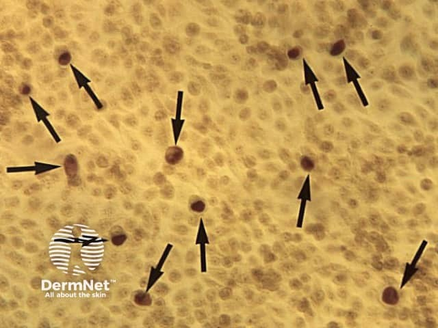
А вот так выглядят хламидии в препарате, окрашенном по Гимзе. На фоне бледных клеток эпителия видны тёмные внутриклеточные включения — это скопления хламидий на разных стадиях своего цикла развития. Хламидия занимает особое место среди бактериальных ИППП: она облигатный внутриклеточный паразит, то есть живёт и размножается только внутри клетки хозяина, что существенно осложняет и диагностику, и лечение. Контагиозность хламидийной инфекции очень высока: хламидии выявляют у 80% женщин — половых партнёрш инфицированных мужчин.[5, с. 215]
Теперь о путях передачи — это ключевое для понимания всей группы. Основной и наиболее частый путь — контактный половой: именно он объединяет все перечисленные нозологии в одну группу. Не будь этого признака общим, пришлось бы рассматривать сифилис, трихомониаз и кандидоз в совершенно разных разделах инфекционной патологии — без какой-либо клинической точки схождения. При половом контакте с больным сифилисом риск заражения в среднем составляет 45%. Цифра немаленькая, особенно с учётом того, что иммунитет к сифилису после перенесённой инфекции не формируется: реинфекция возможна многократно.
Помимо полового пути выделяют ещё два. Первый — прямой неполовой, или бытовой контакт: поцелуй, укус, пользование общими предметами. Этот путь реализуется значительно реже. Бытовая передача гонореи, например, происходит менее чем в 1% случаев. Условно-патогенные микроорганизмы, которых иногда выделяют при ИППП, ещё реже становятся самостоятельными возбудителями уретрогенных инфекций — не более чем в 1–5% случаев.
Второй дополнительный путь — вертикальный (его ещё называют трансплацентарным): передача возбудителя от матери плоду во время беременности или при прохождении новорождённого через родовые пути. Именно поэтому при гонорее профилактику гонобленореи проводят в родильном зале сразу после рождения — закапыванием 30% раствора сульфацила натрия, а девочкам одновременно обрабатывают половые органы тем же раствором.[5, с. 213]
Отдельного внимания заслуживает смешанная инфекция — одновременное заражение двумя и более возбудителями. Она не редкость: при уретрогенных инфекциях ассоциации возбудителей выявляются закономерно, и смешанная инфекция существенно осложняет лабораторную диагностику каждого из них. При гарднерелёзе, например, нередко обнаруживаются и хламидии, и гонококки, и трихомонады одновременно.[5, с. 223] Инфекция C. vaginalis в 50% случаев протекает бессимптомно — преимущественно у мужчин,[5, с. 223] что делает таких пациентов скрытым источником заражения для партнёров.
Главное, что из этого следует запомнить: ИППП — не однородная группа, а сборная по возбудителю, но единая по пути передачи; иммунитет после большинства из них не вырабатывается, реинфекция возможна, а смешанные инфекции — правило, а не исключение.
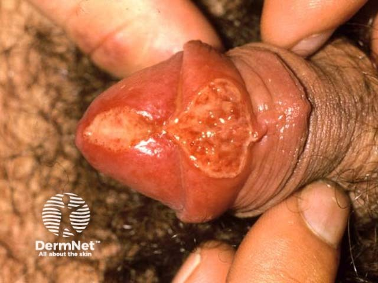
Сифилис: определение, этиология, антропофильность и исторические сведения
Сифилис — общее инфекционное заболевание, вызываемое бледной трепонемой (Treponema pallidum), склонное к хроническому рецидивирующему течению с характерной периодизацией клинических симптомов и способное поражать все органы и системы. Иначе говоря, речь идёт не о болезни кожи и не о болезни одного органа, а о системной инфекции с волнообразным прогредиентным течением, то есть таким, при котором каждая новая волна оставляет больший след, чем предыдущая.
Само слово «сифилис» восходит к мифологическому пастуху Сифилу — герою поэмы итальянского врача и поэта Дж. Фракасторо (1590), наказанному богами болезнью половых органов за дерзость. Параллельно в медицинском обиходе прочно закрепился латинский синоним — lues, то есть попросту «зараза», «заразная болезнь». Оба слова до сих пор живут в документации и клинических текстах, и встретить их можно в любом венерологическом отделении.
Болезнь известна с глубокой древности: её описания встречаются в египетских, китайских и индийских папирусах, относящихся к эпохе до нашей эры. Первое средство для лечения — соединения ртути и ртутные мази — предложил Парацельс. Это решение, конечно, было далеко от современного, однако оставалось главным оружием против сифилиса на протяжении нескольких столетий. В наружной терапии мази отличаются от паст большим содержанием основы — 80—90% (80-90%).[2, с. 155] Возбудитель болезни открыт значительно позже — в 1905 году.
Возбудитель сифилиса — бледная трепонема — относится к порядку Spirochaetales, семейству Spirochaetaceae, роду Treponema, виду Treponema pallidum. Название «бледная» она получила из-за слабой способности воспринимать окраску, то есть попросту говоря — стандартные красители почти её не окрашивают, и в обычном световом микроскопе увидеть её практически невозможно; диагностику проводят в тёмном поле зрения на нефиксированных препаратах. Форма трепонемы — штопорообразная спираль, слегка суживающаяся к концам; завитков от 5 до 24, в среднем 8–14, длина микроорганизма составляет 6–10 мкм. Трепонема совершает четыре вида движений: поступательное, ротаторное, сгибательное и контрактильное; размножается поперечным делением; является факультативным анаэробом и термолабильна.
Устойчивость трепонемы к внешним воздействиям невысока. Она мгновенно гибнет в 0,05% хлоргексидине, в сулеме 1:1000, в 1–2% феноле, в 70% и выше спирте; кислая и щелочная среда действуют на неё губительно; оптимальный pH для жизнедеятельности трепонемы составляет 7,4. Вместе с тем под влиянием неблагоприятных факторов трепонемы способны переходить в устойчивые формы выживания — цисты и L-формы, — что существенно осложняет лечение и объясняет возможность длительного скрытого персистирования инфекции.
Принципиально важное свойство возбудителя — его антропофильность, то есть попросту исключительная приуроченность к человеку как хозяину: несмотря на успешные лабораторные эксперименты по заражению животных, в естественных условиях животные к сифилису не восприимчивы.[2, с. 104] Передача инфекции возможна только от человека к человеку. Это свойство определяет и эпидемиологию болезни, и подходы к её профилактике.
Для заражения необходимы два условия: достаточное число вирулентных трепонем в материале от больного и нарушение целостности кожного покрова или слизистой оболочки — в том числе микроскопическая травма, невидимая невооружённым глазом. Трепонемы обнаруживаются не только в отделяемом сифилитических высыпаний, но и в слюне, в молоке кормящей женщины, в семенной жидкости, в слизи канала шейки матки; излюбленным убежищем возбудителя служит лимфатическая система, и он может присутствовать в любом органе.
Основной путь заражения — половой, при прямом контакте, создающем наиболее благоприятные условия для проникновения трепонем; именно преобладание полового пути стало причиной отнесения сифилиса к венерическим болезням. Слюна заразна при наличии высыпаний на слизистой рта; грудное молоко, сперма и влагалищный секрет — заразны даже в отсутствие видимых высыпаний. Вместе с тем контагиозность при сифилисе неодинакова на разных стадиях: сухие сифилиды менее заразны, а проявления третичного сифилиса практически не представляют эпидемической опасности.
Внеполовое заражение реализуется несколькими путями. Прямой неполовой контакт — поцелуй, укус, кормление грудью — на практике встречается редко; в бытовых условиях особой опасности подвергаются маленькие дети при наличии активных форм сифилиса у родителей.[2, с. 104] Профессиональное заражение грозит медицинским работникам — стоматологам, хирургам, акушерам-гинекологам, патологоанатомам — при контакте с инфицированным материалом. Непрямой путь — через предметы, загрязнённые биологическими жидкостями больного: стаканы, ложки, зубные щётки, курительные трубки, — реален при тесном бытовом контакте.
Трансфузионный путь заражения возникает при переливании крови от больного донора; классически он ведёт к так называемому «обезглавленному сифилису» — без первичного шанкра, поскольку трепонемы попадают непосредственно в кровоток. Сегодня реальный риск этим путём существует прежде всего у потребителей наркотиков при совместном использовании шприцев. Наконец, внутриутробная передача от больной матери ребёнку происходит через сосуды поражённой плаценты и служит причиной врождённого сифилиса.
Распространение сифилиса подчиняется закономерностям, связанным как с биологией возбудителя, так и с социальными условиями: вспышки заболеваемости повторяются примерно каждые 10–12 лет. Промискуитет, коммерческий секс, отдельные практики сексуального поведения — всё это факторы, которые поддерживают циркуляцию возбудителя в популяции и определяют неравномерное распределение заболеваемости среди разных групп населения.
Патогенез сифилиса: иммунные механизмы и волнообразность течения
Необходимым условием заражения сифилисом служит наличие входных ворот — повреждений рогового слоя эпидермиса или эпителия слизистой оболочки.[2, с. 104] Это не просто оговорка: целый эпителий для бледной трепонемы непроницаем. Именно поэтому риск заражения при половом контакте с больным составляет в среднем 45%, а не 100% — даже тесный контакт без нарушения барьера оставляет шанс.
Проследите, как развивается инфекция шаг за шагом — от момента контакта до третичного периода.
Попав в ткани, трепонема ведёт себя неожиданно стремительно. Уже через 2–4 ч после инфицирования возбудитель начинает продвигаться по лимфатическим путям и внедряется в лимфатические узлы.[2, с. 107] С первых суток инфекция становится генерализованной: трепонемы распространяются гематогенным и нейрогенным путями, и бактерии обнаруживаются в крови, внутренних органах и нервной системе.[2, с. 107] Ни клинических симптомов, ни морфологического ответа тканей в это время ещё нет — идёт инкубационный период, который обычно длится 20–40 дней. Он укорачивается до 8–15 дней при массивном инфицировании (множественные или биполярные шанкры) и удлиняется до 3–5 мес при тяжёлых сопутствующих заболеваниях, у пожилых, а также при лечении малыми дозами антибиотиков — в том числе когда одновременно лечат гонорею.
Почему иммунная система не останавливает трепонему в самом начале? Причин несколько, и они действуют одновременно. Гликопептиды клеточной стенки трепонемы по структуре и составу близки к гликопептидам лимфоцитов человека — распознать «чужого» трудно.[2, с. 107] Трепонемы выделяют вещества, замедляющие само распознавание.[2, с. 107] После внедрения они быстро уходят в лимфатические капилляры, сосуды и узлы, физически избегая макрофагальной реакции.[2, с. 107] Наконец, даже если макрофаг захватывает трепонему, та в большинстве случаев не погибает, а остаётся недоступной для защитных сил организма.[2, с. 107] Ранние стадии сифилиса характеризуются частичным угнетением клеточного иммунитета, что дополнительно способствует размножению и распространению возбудителей.[2, с. 107]
Гуморальное звено иммунитета не в состоянии обеспечить полное уничтожение и элиминацию бледных трепонем. На протяжении всего инкубационного периода возбудители активно размножаются в области входных ворот, лимфатической системе и внутренних органах.[2, с. 107] В конце инкубации количество трепонем значительно возрастает, и больные в этот период уже заразны — хотя сами об этом не подозревают.[2, с. 107]
Первичный период начинается с появлением твёрдого шанкра на месте внедрения возбудителя. Вторичный — с генерализованной сыпью, когда трепонемы массово выходят в кровоток. Именно здесь проявляется то, что называют волнообразностью течения — чередованием манифестных и скрытых фаз болезни. Механизм прост: на очередное размножение трепонем иммунная система отвечает усилением выработки антител, напряжённость гуморального иммунитета нарастает до максимума, образуются иммунные комплексы — и трепонемы массово гибнут.[2, с. 109] Сифилиды постепенно исчезают в течение 1,5–2 месяцев, болезнь переходит в латентную стадию, которая в среднем длится 2,5–3 месяца.[2, с. 109] Затем оставшиеся трепонемы вновь начинают размножаться, антитела снова накапливаются — и первый рецидив наступает примерно через 6 месяцев после заражения.[2, с. 109] Этот цикл повторяется: манифестация → гибель трепонем под действием антител → ремиссия → новый рецидив.
Представьте себе пружину ручного насоса, которую нажимают и отпускают раз за разом: каждый цикл внешне одинаков, но с каждым повтором остаточное давление в системе чуть меняется. Примерно так работает и иммунный маятник при сифилисе — с каждым новым циклом нарастает сенсибилизация к трепонеме при одновременном снижении числа возбудителей в организме.[2, с. 109]
Через в среднем 2–4 года с момента заражения характер тканевой реакции меняется принципиально. Ответ на возбудителя начинает протекать по типу феномена Артюса — местной иммунокомплексной реакции, при которой антитела связываются с антигеном прямо в тканях, активируется комплемент и развивается очаговый некроз.[2, с. 109] Итогом служит формирование типичной инфекционной гранулёмы — плотного клеточного инфильтрата из лимфоцитов, плазматических, эпителиоидных и гигантских клеток с некрозом в центре.[2, с. 109] Именно так выглядит гистологическая основа третичных сифилидов — бугорков и гумм. Клинически это деструктивные, а не пролиферативные изменения: они оставляют после себя рубцы или рубцовую атрофию. Третичный период развивается у больных, не получавших лечения или лечившихся недостаточно, обычно через 2–4 года после заражения.[2, с. 109]
Отдельного разговора заслуживает иммунитет при сифилисе — он устроен иначе, чем при большинстве инфекций. Врождённого иммунитета не существует. Истинный, или стерильный, иммунитет не формируется: человек, полностью излечившийся от сифилиса, может заразиться повторно точно так же, как никогда не болевший.[2, с. 110] Такое повторное заражение называется реинфекцией и служит убедительным доказательством полной излечимости сифилиса.[2, с. 110] Пока же трепонемы сохраняются в организме, развивается нестерильный, или инфекционный, иммунитет: новое заражение в этот период невозможно.[2, с. 110] Суперинфекция — наслоение новой дозы возбудителя — реальна лишь в инкубационном периоде, в первые 10 дней первичного периода и в третичном периоде при значительной его длительности; в остальное время инфекционный иммунитет препятствует этому.
При злокачественном течении сифилиса иммунный ответ может быть настолько подавлен, что серологические реакции оказываются отрицательными — и становятся положительными лишь после начала лечения.[2, с. 110] Это исключение подчёркивает общее правило: при сифилисе иммунитет не уничтожает возбудителя, а лишь удерживает его в равновесии — до тех пор, пока это равновесие не сместится в сторону третичных разрушений.
Сифилис: классификация периодов и форм
Сифилис — одна из немногих инфекций, где стадия болезни меняет всё: клинику, заразность, тактику лечения и прогноз. Поэтому классификация здесь не формальность, а рабочий инструмент врача. Посмотрите на таблицу ниже — она собирает все периоды в одном месте, а дальше разберём каждый из них подробнее.
| Период | Начало / длительность | Главные клинические признаки | Заразность |
|---|---|---|---|
| Инкубационный | С момента заражения; обычно 20–40 дней, может укорачиваться до 8–15 дней или удлиняться до 3–5 мес | Симптомов нет | Заразен (трепонемы уже присутствуют) |
| Первичный | От появления твёрдого шанкра; длится 6–7 нед | Твёрдый шанкр, регионарный лимфаденит, в конце — специфический полиаденит | Высокая (особенно при мокнущих эрозиях) |
| Вторичный | В среднем через 2,5 мес после заражения; длится 2–4 года | Генерализованные высыпания (розеолы, папулы, пустулы), алопеция, лейкодерма; волнообразное течение | Наибольшая в первые 2 года |
| Третичный | Через 5 лет и более; длится годами | Бугорки, гуммы, поражения внутренних органов и нервной системы | Минимальная (единичные трепонемы в глубине инфильтрата) |
| Скрытый ранний | До 1–2 лет от заражения (в зависимости от классификации) | Клиники нет; серологические реакции положительны | Высокая |
| Скрытый поздний | Более 1–2 лет от заражения | Клиники нет; серологические реакции положительны | Снижена |
| Скрытый неуточнённый | Сроки заражения установить невозможно | Клиники нет; серологические реакции положительны | Неизвестна |
| Врождённый ранний | Проявления при рождении или в первые 3–4 мес жизни | Поражения кожи, слизистых, внутренних органов, костей | Высокая при мокнущих элементах |
| Врождённый поздний | После 2 лет жизни | Триада Гатчинсона и другие стигмы | Низкая |
Инкубационный период начинается в момент внедрения трепонемы и заканчивается появлением первого симптома — твёрдого шанкра. Обычно он длится 20–40 дней.[5, с. 185] Симптомов нет, однако больной уже заразен. Период может укорачиваться до 8–15 дней при массивном инфицировании или удлиняться до 3–5 месяцев — у пожилых, при тяжёлых сопутствующих болезнях, при лечении малыми дозами антибиотиков по поводу других инфекций.[5, с. 185]
Первичный период отсчитывается от появления твёрдого шанкра и длится 6–7 недель.[5, с. 185] На месте входных ворот возникает единственный сифилид первичного периода — шанкр; к нему присоединяется регионарный лимфаденит, а в конце периода — специфический полиаденит, который сохраняется ещё около полугода. Посмотрите на снимок ниже: именно так выглядит классический твёрдый шанкр — крупная язвенно-эрозивная сифилома с чёткими краями и плотным основанием, типичной локализацией на половом члене.
Обратите внимание на ровные края и однородное дно — именно эта безболезненная «пробитость» ткани с хрящевидным уплотнением в основании отличает первичную сифилому от банальной эрозии или герпетической язвочки.
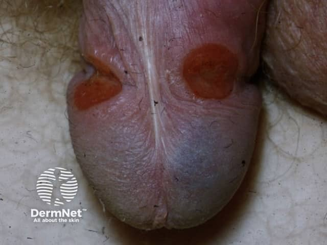
На втором снимке — ещё один вариант первичного шанкра на вентральной поверхности головки полового члена: форма та же, но расположение напоминает, что шанкр бывает везде, где произошёл контакт.
Вторичный период начинается в среднем через 2,5 месяца после заражения[2, с. 106] — когда трепонемы, размножившиеся за время инкубационного и первичного периодов, выходят в кровоток волной генерализованной диссеминации. Длится этот период в большинстве случаев 2–4 года.[2, с. 108] Главная его черта — волнообразность: манифестные фазы со сыпью сменяются скрытыми фазами, и так по кругу. Первая волна называется вторичным свежим сифилисом (syphilis II recens): сыпь обильная, яркая, ей сопутствует угасающий твёрдый шанкр. Последующие вспышки — вторичный рецидивный сифилис (syphilis II recidiva): элементов меньше, они крупнее и группируются. Промежутки между ними — вторичный латентный сифилис (syphilis II latens). Каждый приступ высыпаний существует около 1,5–2 месяцев, после чего регрессирует самопроизвольно.
Контагиозность больного наиболее высока в первые 2 года заболевания — именно тогда, когда трепонем в организме больше всего. После 2 лет существования инфекции она снижается.
На снимке — кондиломы lata в области пупка: плоские мясистые разрастания коричневатого цвета. Это один из характерных элементов вторичного сифилиса в складках и вокруг естественных отверстий — очень заразный, потому что мокнущий.
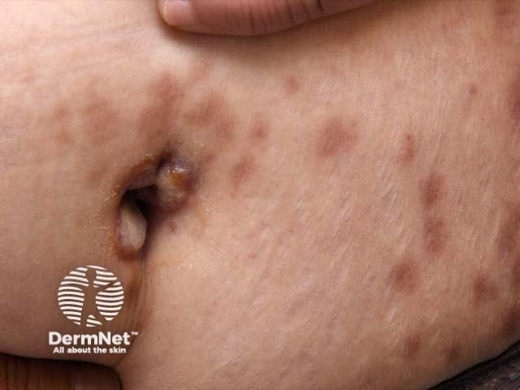
Третичный период развивается через 5 лет и более. Его морфологическая основа — инфекционная гранулема: бугорки и гуммы. Гуммы бывают единичными, сгруппированными или в виде диффузного инфильтрата. Фиброзные гуммы у разгибательных поверхностей крупных суставов — безболезненные, хрящевидной плотности узлы величиной 1,5–2 см (1.5-2 см), кожа над ними не изменена. Проявления третичного сифилиса практически не заразны: трепонем в гуммозном инфильтрате единицы, расположены они глубоко. На снимке волосистой части головы — участок деструкции и выпадения волос на фоне гуммозного поражения: неровные края, рубцовые изменения — картина, совсем не похожая на алопецию вторичного периода.

Скрытый сифилис — это форма заболевания, при которой активных проявлений на коже, слизистых или во внутренних органах нет, но серологические реакции остаются положительными.[2, с. 121] Диагноз ставится только по лабораторным данным. Скрытый сифилис делят на три варианта. Ранний скрытый — продолжительность заболевания до 1 года (по кафедре — до 2 лет); он опасен, потому что больной может давать рецидивы манифестного вторичного сифилиса. Поздний скрытый — более 1 года (по кафедре — более 2 лет); контагиозность снижена. Неуточнённый скрытый сифилис — сроки заражения установить невозможно.[2, с. 121]
Здесь важно отметить расхождение источников: учебник называет границей 1 год, тогда как кафедральный норматив разделения раннего и позднего скрытого сифилиса — 2 года. В практической работе ориентируйтесь на рубеж 2 лет.
Врождённый сифилис — инфицирование плода через плаценту от больной матери. Трансплацентарное заражение происходит обычно не ранее 16-й недели беременности, после завершения формирования плаценты.[2, с. 106] Трепонемы проникают сразу в кровоток и внутренние органы плода, поэтому шанкра и других проявлений первичного периода при врождённом сифилисе не бывает.[2, с. 106] Классификация включает ранний врождённый сифилис — проявления обнаруживаются сразу после рождения или в первые 3–4 месяца жизни — и поздний врождённый сифилис, который манифестирует после 2 лет.[2, с. 123] На снимке — ребёнок с кольцевидными шелушащимися высыпаниями на лице и в височной области: это типичная картина раннего врождённого сифилиса, почти патогномоничная по сочетанию возраста, локализации и характера элементов.

Полная классификация приобретённого сифилиса выглядит так: первичный серонегативный, первичный серопозитивный, вторичный свежий, вторичный рецидивный, вторичный латентный, третичный активный, третичный латентный, скрытый ранний, скрытый поздний, скрытый неуточнённый, нейросифилис, висцеральный сифилис — плюс ранний и поздний врождённый.[5, с. 186]
Теперь — разбор случая, который сводит всю классификацию к одному практическому шагу.
Что видит врач. К дерматовенерологу направляют пациента: жалоб нет, но при профилактическом обследовании обнаружены положительные серологические реакции на сифилис. Кожа и слизистые чистые, лимфатические узлы не увеличены.
Что он из этого выводит. Перед нами скрытый сифилис. Следующий шаг — определить его форму. Врач уточняет анамнез: был ли первичный шанкр, когда — примерно — произошёл контакт, проходил ли пациент лечение. Если с момента возможного заражения прошло менее 2 лет и в анамнезе можно восстановить эпизод первичного или вторичного сифилиса — это ранний скрытый. Если прошло более 2 лет или сроки не удаётся установить — поздний скрытый или неуточнённый соответственно.
Что делает дальше. Форма скрытого сифилиса определяет и схему лечения, и режим наблюдения, и объём обследования контактных лиц. Ранний скрытый требует активного поиска половых партнёров: больной мог давать манифестные рецидивы и заражать их, не подозревая об этом.
Отдельно стоит «обезглавленный» (трансфузионный) сифилис. Если возбудитель сразу попал в кровоток — при переливании крови от больного донора или при глубоком порезе, когда трепонемы прямо в сосуд, — первичного периода не будет вовсе.[5, с. 186] Инкубационный период при этом удлиняется, а болезнь начинается сразу с генерализованных вторичных высыпаний — в среднем через 2,5 месяца после заражения.[2, с. 106] Ни твёрдого шанкра, ни регионарного лимфаденита врач не найдёт, потому что их просто не было. Тот же механизм — при трансплацентарном заражении плода: трепонемы минуют входные ворота кожи и сразу оказываются во внутренних органах, поэтому у новорождённого с врождённым сифилисом первичного периода тоже не бывает.[2, с. 106]
Сифилису в целом свойственно волнообразное течение: активные проявления сменяются скрытыми состояниями, и так — годами. При состоявшемся инфицировании чаще всего — в 90–95% (90—95%) случаев — наблюдается классическое течение инфекции.[5, с. 185] Классическое течение стадийно и предсказуемо. Бессимптомное течение возможно, но реже — по разным данным, оно наблюдается у 5–10% заболевших. Знание всех этих форм — не академизм: именно от того, в какой период и в какой форме застан сифилис, зависит, с чего начать лечение, кого из контактов обследовать и как долго наблюдать пациента.
Первичный период сифилиса: твёрдый шанкр
Через 3–4 недели после заражения на месте внедрения бледных трепонем появляется первый и главный признак болезни — твёрдый шанкр, или первичная сифилома (ulcus durum). Именно с этого момента начинается первичный период сифилиса, который при классическом течении продолжается 5–6 недель, а завершается появлением генерализованных высыпаний. Сроки, однако, не жёсткие: по данным разных источников, продолжительность первичного периода может составлять 4–5 или 9–12 недель.
Само по себе понятие «инкубационный период» здесь стоит оговорить отдельно, поскольку оно нередко сдвигается далеко от классических трёх-четырёх недель. Приём даже незначительных доз антибиотиков из групп тетрациклина, эритромицина (макролидов) или пенициллина — по любому другому поводу — способен укоротить инкубацию до 9 дней или растянуть её до 6 месяцев. Порядок величин здесь показателен: разброс от минимума до максимума составляет примерно двадцатикратный — от 9 дней до полугода. На практике это означает одно: если пациент за несколько месяцев до появления шанкра лечил «ангину» или «грипп» антибиотиком, стандартный расчёт контактов по трём-четырём неделям окажется бесполезным.
Морфогенез: от пятна до язвы
Первичная сифилома не возникает сразу как язва — она проходит несколько стадий. На месте внедрения трепонем сначала появляется красное гиперемическое пятно. Через 2–3 дня оно инфильтрируется и превращается в папулу — плотный узелок, который не причиняет никаких субъективных ощущений. Затем в центре инфильтрата, где нарушается питание эпидермиса и поражаются сосуды, формируется некроз: папула эрозируется или изъязвляется. Глубина дефекта зависит от выраженности тканевой реакции — у одних больных остаётся поверхностная эрозия, у других образуется настоящая язва.
Патогистологически в зоне шанкра отсутствует эпидермис, а в дерме — плотный инфильтрат из лимфоцитов и плазматических клеток с периваскулярным расположением. Сосуды поражены по типу панваскулита с облитерацией и тромбозом; именно в стенках этих сосудов сосредоточено наибольшее количество бледных трепонем.
Клиническая картина типичного шанкра
Сформировавшийся типичный твёрдый шанкр — это круглая или овальная безболезненная эрозия или поверхностная язва с гладким дном и чёткими пологими, неподрытыми краями. Дно блестящее, ярко-красного цвета или покрыто тонким слоем серо-жёлтого налёта; отделяемое скудное, серозное, прозрачное. При эрозивном шанкре края и дно находятся на одном уровне. В основании пальпируется плотный пластинчатый или узелковый инфильтрат — именно он дал элементу название «твёрдый»: хрящевидная плотность основания ощущается как тонкая монета или пуговица, вшитая под кожу.
Представьте себе, что вы берёте шанкр двумя пальцами: кожа над ним собирается в складку вместе с подлежащим инфильтратом, и весь этот пакет остаётся плотным — не тестоватым, не болезненным, без флюктуации. Это принципиально отличает первичную сифилому от любого воспалительного элемента с жидким гнойным содержимым.
Островоспалительные изменения кожи вокруг шанкра отсутствуют, болезненность не характерна — она возникает лишь при присоединении вторичной инфекции или при особых локализациях (об этом ниже).
Размеры и количество
Шанкры бывают одиночными или множественными. Обычный твёрдый шанкр имеет размеры 0,5–1,0 см. Карликовые шанкры достигают до 2 мм — они легко остаются незамеченными, особенно в складках. Гигантские шанкры превышают 1,5 см. Соотношение крайних размеров — примерно 1 к 25: карликовый шанкр в 25 раз меньше гигантского. Практический смысл этого разброса прост: студент, ожидающий «классическую» монету в сантиметр, рискует не заметить ни крошечный дефект на шейке матки, ни обширную язву с гангренозным распадом.
Локализация: типичная и атипичная
При половом заражении шанкры располагаются преимущественно на половых органах и прилегающих участках. У мужчин — на головке полового члена, венечной борозде, внутреннем листке крайней плоти; у женщин — на больших и малых половых губах, задней спайке. Шанкры на шейке матки обнаруживаются у 12% женщин, и без осмотра с помощью влагалищного зеркала они останутся пропущенными. Редкость локализации шанкров на стенках влагалища объясняется кислой реакцией влагалищного секрета, губительной для трепонем.
На шейке матки первичная сифилома принимает вид кольцевидной или полулунной эрозии. На грудном соске — полулуния. В анальной складке, на краю препуциального мешка, в углах рта шанкр представлен трещиной. Экстрагенитальные шанкры возможны на любом участке кожи и слизистых: на губах, языке, миндалинах, молочных железах, пальцах рук. Второе по частоте место после половых органов занимает слизистая оболочка рта.
Там, где анатомия не допускает округлого дефекта — в складках, щелях, у отверстий — шанкр становится болезненным. Угол рта, миндалины, складки заднего прохода, наружное отверстие мочеиспускательного канала: в этих точках болезненность присутствует как правило. Это важно: отсутствие боли — не абсолютный признак шанкра, а лишь типичный.
Атипичные шанкры
Шанкр-амигдалит поражает нёбную миндалину: она увеличивается, уплотняется, приобретает синюшный оттенок; больной жалуется на боль при глотании. Видимого язвенного дефекта нет, поражение всегда одностороннее, в процесс вовлекаются подчелюстные и шейные лимфоузлы. Сходство с банальной ангиной велико — и именно это делает шанкр-амигдалит частой причиной диагностических ошибок.
Индуративный отёк — плотный безболезненный отёк без ямки при надавливании: у мужчин он захватывает крайнюю плоть и мошонку, у женщин — клитор, большие и малые половые губы. Орган увеличивается в объёме в 2–3 раза, кожа приобретает тёмно-красный цвет с синюшным оттенком или остаётся внешне не изменённой; островоспалительные явления отсутствуют.
Шанкр-панариций локализуется на дистальной фаланге пальца и представляет собой глубокую язву с неровными подрытыми краями полулунной или подковообразной формы; дно изрыто, покрыто гнойно-некротическими массами. Сопровождается «стреляющими» болями. Чаще всего встречается у хирургов, гинекологов, патологоанатомов — как профессиональное заражение.
Помимо трёх классических атипичных форм, существуют разновидности типичного шанкра по поверхности: дифтеритический (покрыт сероватой некротической плёнкой), корковый (на лице и губах напоминает пиодермию), щелевидный (в складках — углах рта, межпальцевых промежутках, у ануса) и эрозивный шанкр Фольмана — без чёткого уплотнения в основании.
Регионарный лимфаденит и лимфангит
Почти постоянный спутник первичной сифиломы — регионарный склераденит (bubo syphiliticus): увеличение и уплотнение лимфатических узлов, дренирующих место входных ворот инфекции. Он появляется через 5–14 дней после шанкра. Узлы плотные, безболезненные, подвижные, не спаянные между собой; кожа над ними не изменена. Группа узлов, ближайшая к шанкру, крупнее остальных — так называемая «плеяда» паховых лимфоузлов достигает размеров фасоли или голубиного яйца. Принципиально важно: сифилитический склераденит никогда не нагнаивается и не вскрывается самостоятельно — это один из признаков, позволяющих отличить его от банального лимфаденита.
Если в инкубационном периоде пациент получал антибиотики, регионарный лимфаденит может не сформироваться или быть выражен слабо — клиническая картина первичного периода окажется неполной.
Третий компонент клинической картины первичного периода — специфический лимфангит: воспаление лимфатического сосуда на всём протяжении от шанкра до регионарных лимфоузлов. Он прощупывается как плотноэластический безболезненный шнур; лучше всего определяется на спинке полового члена.
В конце первичного периода, за 7–10 дней до его завершения, присоединяется специфический полиаденит — увеличение и уплотнение уже нескольких групп лимфатических узлов, удалённых от входных ворот инфекции. Диагностическую ценность полиаденит имеет только в сочетании с другими симптомами. Тогда же нередко появляются продромальные явления гриппоподобного характера: головная боль, костно-суставные и мышечные боли, общая слабость, бессонница, повышение температуры.
Таким образом, полный клинический комплекс первичного периода включает пять элементов: твёрдый шанкр, регионарный лимфаденит, специфический лимфангит, специфический полиаденит и продромальные явления. Первичный период завершается появлением классических серологических реакций и РИБТ.
Осложнения твёрдого шанкра
При присоединении вторичной инфекции у мужчин развивается эрозивный баланопостит с возможным исходом в фимоз (отёк и увеличение крайней плоти не позволяют обнажить головку) или парафимоз (насильственное обнажение головки при фимозе приводит к нарушению крово- и лимфотока, нарастанию отёка и выраженной болезненности). У женщин развивается вульвит или вульвовагинит.
Два наиболее грозных осложнения — гангренизация и фагеденизм. При гангренизации сифилома подвергается некротическому распаду с образованием струпа грязно-серого, бурого или чёрного цвета, плотно спаянного с подлежащими тканями и безболезненного; в пределах шанкра — угроза самоампутации полового члена. Фагеденизм опаснее: некротический процесс выходит за пределы шанкра и распространяется как вглубь, так и по периферии на здоровую кожу, возможны повторные вспышки гангренизации и кровотечения. При злокачественном сифилисе именно такие язвенные шанкры со склонностью к некрозу и периферическому росту доминируют в первичном периоде, а реакция лимфатической системы при этом может отсутствовать; сам период укорачивается до 3–4 недель.
Контагиозность в первичном периоде
Наибольшей заразности больной достигает именно в первичном и вторичном периодах — там, где на коже и слизистых есть активные, особенно эрозированные и мокнущие проявления с большим количеством вирулентных трепонем. Сухие сифилиды менее заразны, а при третичном и латентном сифилисе заразительность практически минимальна. Это значит, что твёрдый шанкр — не просто диагностический знак: это главный источник распространения инфекции.
Дифференциальный диагноз
Чаще всего шанкр приходится отличать от нескольких состояний.
Фурункул в генитальной области болезнен с самого начала, имеет островоспалительный венчик, флюктуацию и некротический стержень в центре — ничего общего с хрящевидной плотностью основания шанкра.
Эрозивный баланопостит или вульвит даёт множественные поверхностные дефекты с гнойным отделяемым, выраженным отёком и болезненностью; плотного инфильтрата в основании нет. В более редких случаях дифференцируют с кандидозным баланопоститом, поражением при трихомониазе и острыми язвами Люпшитца.
Простой герпес начинается со сгруппированных пузырьков, жжения и зуда; эрозии после вскрытия пузырьков болезненны, имеют полициклический контур, а регионарные лимфоузлы — умеренно увеличены и болезненны. Главное отличие от шанкра — отсутствие плотного инфильтрата в основании и выраженная болезненность.
Спиноцеллюлярная эпителиома (плоскоклеточный рак) на половых органах может образовывать язву с уплотнённым основанием, имитирующую шанкр. Решающий аргумент — бактериоскопия отделяемого на бледную трепонему и серологические реакции; при сомнении показана биопсия.
Шанкриформная пиодермия занимает особое место: она локализуется на половых органах, имеет округлую язву с уплотнением в основании. Отличие — плотный инфильтрат при пиодермии выходит за пределы язвенного дефекта, тогда как при шанкре он точно соответствует его границам.[5, с. 51] Окончательно разграничивают их исследование на бледную трепонему и серореакции.
Главное, что следует вынести из этого раздела: твёрдый шанкр диагностируется по сочетанию трёх признаков — безболезненная эрозия или язва с чёткими пологими краями, хрящевидный инфильтрат в основании и безболезненный регионарный склераденит без нагноения; отсутствие хотя бы одного из них требует пересмотра диагноза и повторного исследования на трепонему.
Первичный период сифилиса: лабораторная диагностика и изменения крови
Кажется, что диагноз сифилиса ставят по анализу крови — сдал, получил результат, всё ясно. На деле в первой половине первичного периода анализ крови будет отрицательным, и именно тогда, когда шанкр уже стоит во всей красе. Главный метод ранней диагностики — не кровь, а соскоб с самого шанкра.
Бледная трепонема получила своё название за то, что плохо воспринимает красители: в обычном световом микроскопе её не видно. Однако в тёмном поле — видно отлично. Метод прост по идее: берут тканевый сок со дна твёрдого шанкра, готовят нативный препарат «раздавленная капля» и исследуют его методом тёмнопольной микроскопии. В тёмном поле трепонема светится серебристой нитью на чёрном фоне и совершает характерные вращательные и поступательные движения — именно эта подвижность отличает живую бледную трепонему от нитей фибрина или других спирохет. Обнаружение возбудителя этим способом — прямое и бесспорное доказательство диагноза, не зависящее от того, выработал ли уже организм антитела.
К арсеналу лабораторных методов относят также ПЦР — полимеразную цепную реакцию, позволяющую выявить ДНК возбудителя. Серологические методы делятся на нетрепонемные и трепонемные. Среди нетрепонемных — МРП (микрореакция преципитации) с кардиолипиновым антигеном и РВ (реакция Вассермана) с кардиолипиновым антигеном; среди трепонемных — РВ с трепонемным антигеном, РИФ (реакция иммунофлюоресценции) и РИБТ (реакция иммобилизации бледных трепонем). Вместе нетрепонемные реакции и РВ с трепонемным антигеном составляют КСР — комплекс серологических реакций.
Теперь посмотрите, как меняются результаты этих тестов по ходу первичного периода — именно в этой динамике и кроется главное практическое содержание раздела.
| Период / фаза | КСР (МРП + РВ) | РИФ | РИБТ | Тёмнопольная микроскопия | Изменения крови |
|---|---|---|---|---|---|
| Конец инкубации | − | ± (иногда уже положительна) | − | шанкра нет | норма |
| Первичный сероотрицательный сифилис (первые ~3–4 нед от появления шанкра) | − | + | − | трепонема обнаруживается | норма или начальные изменения |
| Первичный серопозитивный сифилис (вторая половина первичного периода) | + | + | − (положительна с начала вторичного периода) | трепонема обнаруживается | гипохромная анемия, лейкоцитоз, СОЭ 30–60 мм/ч |
Разберём каждую строку. В конце инкубационного периода шанкра ещё нет, однако РИФ уже иногда даёт положительный результат — это делает её наиболее чувствительным из всех серологических методов.[5, с. 186] КСР становится положительным лишь в середине первичного периода.[5, с. 186] Именно с этим связано деление первичного периода на две клинически важные фазы.
Первичный сероотрицательный сифилис — фаза, при которой шанкр уже есть, а КСР ещё отрицателен: антитела не накопились до выявляемого уровня. Это опасный период: больной заразен, клиника налицо, а стандартный скрининговый анализ молчит. Диагноз в этой ситуации спасает тёмнопольная микроскопия и РИФ, которая уже положительна.
Первичный серопозитивный сифилис — фаза, при которой КСР переходит в положительный. С этого момента серологическая диагностика становится надёжной, хотя тёмнопольная микроскопия по-прежнему остаётся прямым методом подтверждения.
РИБТ — реакция иммобилизации бледных трепонем — считается наиболее специфичной из всех серореакций: положительной она считается при иммобилизации 50% трепонем и более. Она особенно ценна для исключения ложноположительных результатов КСР. Однако в первичном периоде РИБТ ещё отрицательна: она становится положительной лишь с начала вторичного периода.[5, с. 186] РИФ, напротив, положительна уже в первичном сероотрицательном периоде и сохраняется на протяжении всей болезни.
При дифференциальной диагностике с лепрой реактивность макроорганизма оценивают лепроминовой пробой: 0,1 мл суспензии микобактерий лепры вводят внутрикожно.[5, с. 83] Ложноположительные результаты КСР встречаются при малярии, туберкулёзе, лепре, гепатитах, системной красной волчанке, метастазирующих опухолях, лейкозах и при беременности. Как правило, они не бывают резкоположительными. Поэтому диагноз латентного серопозитивного сифилиса ставят лишь при резкоположительных результатах, полученных дважды — в двух разных лабораториях. Именно здесь РИБТ и РИФ становятся решающими: они подтверждают или снимают подозрение.
Последняя строка таблицы отражает продромальный синдром, который появляется за 7–10 дней до окончания первичного периода и сохраняется в первые 5–7 дней вторичного. Больные жалуются на утомляемость, слабость, бессонницу, снижение аппетита, головную боль, лихорадку неправильного типа и миалгии. В крови к этому времени выявляют гипохромную анемию, лейкоцитоз и ускоренную СОЭ — 30–60 мм/ч. Это системный ответ организма на нарастающую диссеминацию трепонем — сигнал, что граница первичного периода уже близка и инфекция готовится перейти в следующую фазу.
Главный практический вывод раздела: в первой половине первичного периода серология молчит, и только тёмнопольная микроскопия шанкра вместе с РИФ позволяют поставить диагноз. Отрицательный КСР на фоне типичного шанкра — не повод отвергнуть сифилис, а повод немедленно идти за соскобом.
Вторичный и третичный периоды сифилиса: сифилиды кожи и слизистых
Вторичный период начинается в среднем через 2,5 месяца после заражения и продолжается в большинстве случаев 2–4 года.[2, с. 108] Его суть — генерализация инфекции: бледная трепонема распространилась по лимфатическим и кровеносным сосудам и оседает там, где застанет её иммунный ответ. Кожа и слизистые при этом покрываются высыпаниями — сифилидами, — и у всех этих высыпаний, при всём их разнообразии, есть общие черты, которые стоит запомнить сразу.
Перечислим эти черты прозой, прежде чем вы увидите их в таблице. Элементы при вторичном сифилисе плотны, имеют тёмно-красную окраску, чёткие правильные округлые очертания и не склонны к слиянию. Шелушение, если есть, — только по периферии очага. Самое важное для диагностики: высыпания не вызывают зуда и болезненности — именно это отличает их от большинства дерматозов, при которых больной прежде всего жалуется на зуд. И наконец, они самопроизвольно исчезают, не оставляя ни атрофии, ни рубцов.
Самое частое проявление вторичного периода — розеолёзный сифилид: пятна неостровоспалительного характера, сначала розовые, затем бледно-розовые, с нерезкими очертаниями, округлой или овальной формы, размером 1–1,5 см в диаметре, с гладкой поверхностью. Розеолы не возвышаются над кожей, не сливаются, не растут по периферии. Излюбленная локализация — боковые поверхности туловища и живот. На слизистых рта и зева те же пятна диагностируются как специфическая эритематозная ангина: застойно-красный цвет с медным оттенком, чёткие очертания, почти без субъективных ощущений.
Папулёзный сифилид — узелки округлой формы, полушаровидные, плотноэластической консистенции, от размера чечевицы до горошины; морфологически это дермальные папулы, инфильтрат которых лежит в сосочковом слое дермы. В первые дни поверхность гладкая и блестящая, затем появляется шелушение с характерной каймой по периферии — «воротничком Биетта». Папулёзный сифилид возникает преимущественно при рецидиве вторичного периода. Локализоваться он может где угодно, но есть излюбленные места: половые органы, ладони, подошвы, область ануса. На ладонях и подошвах папулы выглядят как утолщённые узелки — «мозоли», резко отграниченные от окружающей кожи, эритематозно-бурого или лилово-красного оттенка; лентикулярный сифилид имеет диаметр 0,3–0,5 см (0.3-0.5 см в диаметре). Чечевицеобразные лентикулярные папулы по размеру составляют 0,5—0,7 см в диаметре.[5, с. 23] Папулы здесь растрескиваются в центре, образуя шелушащийся бордюр по окружности, — и больные нередко принимают их за обычные мозоли и к врачу не идут. В складках кожи папулы мокнут, вегетируют и сливаются в так называемые широкие кондиломы, которые нередко оказываются единственным проявлением рецидивного периода. Зуда при папулёзном сифилиде нет.
Эпидемиологически важно: сифилиды слизистых при вторичном сифилисе, особенно в период рецидива, могут быть единственным клиническим проявлением болезни и содержат большое количество бледных трепонем. Мокнущие и эрозивные папулы, вегетирующие кондиломы — наиболее заразные формы; именно они создают основной эпидемиологический риск. Сухие сифилиды менее контагиозны, а проявления третичного периода практически не заразны — содержат лишь единичные трепонемы в глубине инфильтрата.[2, с. 105]
Теперь посмотрите на сравнительную таблицу сифилидов — она собирает всё это в одном месте и добавляет третичный период, о котором речь пойдёт сразу после.
| Признак | Вторичный период | Третичный период |
|---|---|---|
| Основные элементы | Розеолы, папулы, пустулы | Бугорки, гуммы |
| Количество элементов | Множественные, диффузные | Малочисленные |
| Субъективные ощущения | Отсутствуют (зуд, боль не характерны) | Отсутствуют |
| Системность поражения | Генерализованная (кожа, слизистые, внутренние органы) | Локализованная, органная, часто односторонняя |
| Исход | Самопроизвольное исчезновение без рубца и атрофии | Рубец или рубцовая атрофия (мозаичный рубец) |
| Характер изменений | Пролиферативные | Деструктивные |
| Заразность | Высокая (особенно мокнущие и эрозивные формы) | Практически не заразны |
| Тяжесть | Умеренная, поддаётся лечению | Наиболее тяжёлая; обезображивание, инвалидизация, смерть в 10% случаев |
Как видите в таблице, вторичный и третичный периоды противоположны по сути: первый — пролиферативный и генерализованный, второй — деструктивный и локализованный. Вторичные сифилиды исчезают без следа; третичные всегда оставляют рубец. Заразность при этом меняется зеркально: наибольшая — при вторичном, ничтожная — при третичном.
Третичный сифилис начинается чаще всего на 3–5-м году заболевания. Его проявления — самые тяжёлые из всех периодов: деструктивные изменения в коже, слизистых, костях, сосудистой и нервной системе приводят к обезображиванию, инвалидизации и в 10% случаев к смерти. Представлен третичный период двумя видами элементов — бугорками и гуммами, и оба патогистологически являются хронической инфекционной гранулёмой.
Бугорковый сифилид — полушаровидные бугорки тёмно-красного цвета, плотной консистенции. Они изъязвляются с образованием рубца или разрешаются с развитием рубцовой атрофии. Рубец мозаичный: разные бугорки залегают на разной глубине, поэтому рубчики различаются и по рельефу, и по цвету — розовые, бурые, белесоватые. На таком рубце новые бугорки не появляются никогда. Особую форму представляет серпигинирующий сифилид: бугорки не возникают все разом, а появляются один за другим, как бы «ползут» по коже, центральная часть при этом уже рубцуется, а по периферии образуются новые элементы. Такой очаг медленно распространяется по поверхности, оставляя за собой мозаичный след.

На этом снимке — лицо пациента с третичным сифилисом. Обратите внимание на неравномерную поверхность кожи: чередование тёмно-красных бугорков и уже зарубцевавшихся участков разного цвета — именно так выглядит тот самый мозаичный рубец, о котором говорилось выше. Это не пост-воспалительная пигментация, а структурное изменение дермы, которое не исчезнет.
Гумма — глубокий узел, который формируется в подкожной клетчатке или глубже. Сначала это безболезненное плотное образование; затем кожа над ним краснеет, узел размягчается в центре, вскрывается с выделением клейкой жидкости — и на его месте образуется язва. Гуммозная язва круглая, с плоскими, валикообразно возвышающимися краями; на дне — характерный гуммозный стержень: грязно-серые или серозно-жёлтые некротические массы, крепко фиксированные ко дну. После отторжения стержня язва рубцуется. Продолжительность существования гуммы — от нескольких недель до нескольких лет.
Гистологически гумма — это типичная инфекционная гранулёма: в её составе лимфоциты, плазматические клетки, эпителиоидные клетки и гигантские клетки типа Пирогова–Лангханса, а в центре — зона казеозного некроза. Не будь этой гранулематозной реакции, организм лишился бы единственного способа хоть как-то ограничить трепонему в тканях — и деструкция распространялась бы без каких-либо границ.
Посмотрите на этот снимок волосистой части головы: виден участок выпадения волос с изменённой кожей — результат гуммозного поражения. Обратите внимание на то, что граница очага достаточно чёткая, а окружающая кожа почти не изменена: именно так проявляется локализованный, а не диффузный характер третичного поражения. Схожие очаги могут возникать в любом органе — от костей свода черепа до слизистой твёрдого нёба.
Гуммы бывают единичными, сгруппированными или в виде диффузного гуммозного инфильтрата. Отдельно выделяют фиброзные гуммы — они располагаются вблизи разгибательных поверхностей крупных суставов, представляют собой безболезненные узлы хрящевидной плотности величиной 1,5–2 см, кожа над ними не изменена. Системность поражения при третичном сифилисе означает, что бугорки и гуммы могут возникнуть в любом органе, однако чаще всего поражаются кожа и слизистые, кости, сосудистая и нервная системы. При этом высыпания располагаются преимущественно на одной стороне тела, склонны к группированию — в отличие от вторичных, которые рассеяны симметрично. Зуда и болезненности при третичных сифилидах, как и при вторичных, нет.
Врождённый сифилис: ранний и поздний, диагностические признаки
Мать передаёт трепонему плоду через плаценту, и это принципиально отличает врождённый сифилис от приобретённого: первичного периода с твёрдым шанкром здесь нет вовсе — инфекция сразу попадает в кровь и распространяется по органам.[2, с. 123] Если плод не гибнет внутриутробно, рождается ребёнок с уже запущенной инфекцией, и его клиника соответствует сразу вторичному или позднему периодам приобретённого сифилиса.[2, с. 123]
Ранний врождённый сифилис проявляется либо сразу после рождения, либо в первые 3–4 месяца жизни.[2, с. 123] Внешний вид такого новорождённого почти патогномоничен: ребёнок слабо развит, с малой массой тела, кожа дряблая и складчатая из-за истощения подкожной клетчатки. Среди кожных проявлений раннего врождённого сифилиса ключевое место занимает сифилитическая пузырчатка — то есть попросту специфическое образование напряжённых пузырей, наполненных серозно-гнойным содержимым, на ладонях и подошвах новорождённого.[2, с. 123] Локализация строго характерная: именно ладони и подошвы, а не туловище и не лицо. В содержимом этих пузырей обнаруживается бледная трепонема при прямой микроскопии, серологические реакции при этом положительны — таким образом, диагноз подтверждается сразу двумя независимыми методами. Новорождённые с тяжёлыми проявлениями раннего врождённого сифилиса нежизнеспособны и нередко погибают в первые часы или дни после рождения вследствие функциональной недостаточности внутренних органов.[2, с. 123]
Поздний врождённый сифилис манифестирует после 2 лет жизни, чаще в возрасте 7–14 лет. Его диагностические признаки принято делить на две группы: достоверные и вероятные. Посмотрите на Таблицу 1 — в ней это разграничение показано компактно, но ниже разберём каждую строку словами, потому что таблицы читают не все.
| Группа признаков | Признак | Характеристика |
|---|---|---|
| Достоверные (патогномоничные) | Паренхиматозный кератит | Диффузное помутнение роговицы, светобоязнь, слезотечение; двустороннее поражение |
| Специфический лабиринтит | Прогрессирующая нейросенсорная тугоухость вследствие поражения лабиринта | |
| Зубы Гетчинсона | Бочкообразная форма верхних центральных резцов с полулунной выемкой по режущему краю | |
| Вероятные (учитываются в сочетании с достоверными или с положительными серореакциями) | Стрии Робинсона–Фурнье | Радиальные рубцовые складки вокруг рта |
| Саблевидные голени | Дугообразное искривление большеберцовых костей кпереди вследствие перенесённого периостита | |
| Седловидный нос | Западение спинки носа из-за разрушения носовой перегородки | |
| Ягодицеобразный череп | Выраженное разделение лобных бугров срединной бороздой | |
| Сифилитические гониты | Специфическое воспаление коленных суставов без выраженной болезненности |
Три достоверных признака возникают потому, что трепонема непосредственно поражает конкретный орган — не косвенно нарушая его развитие, а разрушая ткань напрямую. Первый — паренхиматозный кератит: диффузное помутнение роговицы с мучительной светобоязнью и слезотечением, как правило двустороннее. Второй — специфический лабиринтит, то есть воспаление внутреннего уха с прогрессирующей нейросенсорной тугоухостью, нередко необратимой. Третий — зубы Гетчинсона — то есть попросту верхние центральные резцы постоянного прикуса, у которых режущий край уже тела зуба и несёт характерную полулунную выемку, из-за чего зуб приобретает бочкообразную или отвёрточную форму. Эта триада — кератит, лабиринтит, зубы Гетчинсона — составляет знаменитую триаду Гетчинсона и самодостаточна для диагноза: каждый из трёх признаков по отдельности уже достоверен.
Вероятные признаки — это иначе устроенная история. Они возникают опосредованно: инфекция нарушает нормальное формирование кости, хряща или кожи в период роста, и орган развивается аномально. Сами по себе вероятные признаки диагноза не устанавливают — они учитываются только в сочетании с достоверными признаками или вместе с положительными серологическими реакциями и данными анамнеза.[2, с. 125]
Разберём их по очереди. Стрии Робинсона–Фурнье — то есть попросту радиальные рубцовые складки, расходящиеся вокруг рта: они остаются после того, как в раннем детстве кожа вокруг рта была инфильтрирована и затем зарубцевалась. Саблевидные голени выглядят именно так, как называются: большеберцовая кость выгнута дугой кпереди — след перенесённого специфического периостита, когда воспалённая надкостница стимулировала избыточное костеобразование на передней поверхности кости. Седловидный нос — западение спинки из-за разрушения носовой перегородки гуммозным процессом или перенесённым ринитом в раннем возрасте. Ягодицеобразный череп формируется при гидроцефалии: лобные доли выбухают симметрично, а между буграми остаётся срединная борозда, и весь свод черепа напоминает по форме ягодицы — название точное и запоминается сразу. Наконец, сифилитические гониты — специфическое воспаление коленных суставов, характерное тем, что при значительном выпоте и отёке боль выражена умеренно, гораздо меньше, чем при банальном синовите.
Отдельно стоят дистрофии, или стигмы: признак Авситидийского (утолщение грудного конца ключицы, чаще правой), аксифоидия — отсутствие мечевидного отростка грудины, олимпийский лоб с очень выпуклыми лобными буграми, высокое готическое твёрдое нёбо, симптом Дюбуа–Гиссара — укорочение и искривление мизинца внутрь вследствие гипоплазии пятой пястной кости, гипертрихоз лба и висков.[2, с. 125] Диагностическое значение дистрофии приобретают лишь тогда, когда у больного одновременно выявляются достоверные признаки позднего врождённого сифилиса и положительные серологические реакции.[2, с. 125]
Главный практический вывод: при позднем врождённом сифилисе диагноз строится на достоверных признаках, вероятные лишь усиливают доказательную базу, а дистрофии без достоверных признаков и положительной серологии диагностического значения не имеют.[2, с. 125]
Лечение и профилактика сифилиса
Главная цель специфического лечения сифилиса — создать в крови и тканях концентрацию антибиотика, достаточную для гибели бледной трепонемы, то есть трепонемоцидную концентрацию. Терапевтическая концентрация пенициллина в крови при лечении сифилиса составляет 0,03 ЕД/мл и выше.[2, с. 127] При нейросифилисе это требование распространяется и на спинномозговую жидкость: препарат должен преодолеть гематоэнцефалический барьер и накопиться в ЦСЖ в нужном количестве. Всё остальное — выбор препарата, его форма, кратность введения, длительность курса — подчинено именно этой задаче.
Основу лечения составляют пенициллины. Они делятся на несколько групп по скорости всасывания и продолжительности действия. Дюрантные препараты — бициллин-1 (бензатин бензилпенициллин) — создают депо в мышце и медленно высвобождаются; одна инъекция держит терапевтический уровень в крови несколько суток. Комбинированный бициллин-5 содержит дибензилэтилендиаминовую, новокаиновую и натриевую соли пенициллина в соотношении 4:1. Препараты средней дюрантности — новокаиновая соль бензилпенициллина — рассасываются за 12 часов, поэтому вводятся дважды в сутки. Наконец, водорастворимая натриевая соль кристаллическая действует лишь 4 часа и требует введения шесть раз в сутки. Из резервных антибиотиков используют тетрациклины (доксициклин), макролиды (эритромицин) и цефалоспорины (цефтриаксон).
Разница между дюрантной и водорастворимой формами пенициллина ощущается примерно так же, как разница между свечой и лампочкой накаливания: свеча горит долго, но даёт немного света; лампочка ярче, но требует постоянного тока. Натриевая соль создаёт высокую пиковую концентрацию — и именно поэтому её выбирают при нейросифилисе, где барьер нужно преодолеть с запасом.
Посмотрите на схемы в таблице ниже — они показывают, как нарастает интенсивность лечения по мере перехода к более поздним стадиям болезни. Разберём каждую строку отдельно.
| Стадия | Препарат | Доза и кратность | Длительность |
|---|---|---|---|
| Первичный сифилис | Бициллин-1 | 2,4 млн ЕД в/м 1 раз в 5 дней | 3 инъекции |
| Бициллин-5 | 1,5 млн ЕД в/м 2 раза в неделю | 5 инъекций | |
| Новокаиновая соль | 600 тыс. ЕД в/м 2 раза в сутки | 20 суток | |
| Натриевая соль кристаллическая | 1 млн ЕД в/м каждые 4 ч (6 раз в сутки) | 20 суток | |
| Вторичный сифилис | Новокаиновая соль | 600 тыс. ЕД в/м 2 раза в сутки | 28 суток |
| Натриевая соль кристаллическая | 1 млн ЕД в/м каждые 4 ч (6 раз в сутки) | 28 суток | |
| Бициллин-1 | 2,4 млн ЕД в/м 1 раз в 5 дней | 6 инъекций | |
| Третичный сифилис | Натриевая соль кристаллическая | 1 млн ЕД в/м каждые 4 ч (6 раз в сутки) → перерыв 2 нед → повторный курс | 28 суток + 14 суток |
| Новокаиновая соль | 600 тыс. ЕД в/м 2 раза в сутки → перерыв 2 нед → повторный курс | 28 суток + 14 суток |
При первичном сифилисе бициллин-1 вводят внутримышечно в дозе 2,4 млн ЕД однократно раз в 5 дней, всего три инъекции. Вместо него можно применить бициллин-5: 1,5 млн ЕД дважды в неделю, пять инъекций на курс. Если выбрана новокаиновая соль, её вводят по 600 тыс. ЕД дважды в сутки в течение 20 суток. Натриевая соль кристаллическая требует более частого введения — 1 млн ЕД каждые 4 часа, то есть шесть раз в сутки, также 20 суток.
При вторичном сифилисе трепонема уже диссеминирована по организму, поэтому курсы удлиняются. Новокаиновая соль — те же 600 тыс. ЕД дважды в сутки, но уже 28 суток. Натриевая соль — 1 млн ЕД каждые 4 часа в течение 28 суток. Бициллин-1 при вторичном сифилисе назначают в той же дозе 2,4 млн ЕД раз в 5 дней, однако курс удваивается: не три, а шесть инъекций.
Третичный сифилис лечат двумя последовательными курсами с обязательным перерывом в 2 недели между ними. Первый курс натриевой или новокаиновой соли по тем же дозам длится 28 суток, второй — 14 суток. Перерыв нужен не для отдыха, а для того, чтобы дать иммунной системе время отреагировать на массовую гибель трепонем и снизить риск реакции Яриша–Герксгеймера при возобновлении лечения.
Отдельного разговора заслуживает превентивное лечение — назначение антибиотика человеку, у которого сифилиса ещё нет, но контакт с больным уже состоялся. Инкубационный период при сифилисе длится в среднем 3–4 недели, и именно в это время трепонема доступна для уничтожения до того, как сформируется первичный аффект. Превентивное лечение проводят лицам, находившимся в половом или тесном бытовом контакте с больным ранними формами сифилиса, при условии что с момента контакта прошло не более 2 месяцев. Если прошло больше — инкубационный период уже миновал либо инфицирования не произошло, и тактика меняется на наблюдение.
Помимо превентивного, существует профилактическое лечение — оно направлено против врождённого сифилиса. Его назначают четырём категориям: беременным, лечившимся до беременности, но сохраняющим позитивность нетрепонемных тестов; беременным, получавшим специфическое лечение во время беременности; новорождённым без клинических признаков болезни от нелечёной или неадекватно леченной матери (в том числе если лечение начато после 32-й недели); и новорождённым, чьи матери при наличии показаний не получили профилактического лечения.
Критерии излеченности складываются из трёх составляющих: полноценно проведённое лечение по действующим схемам; благополучный период наблюдения без клинических и серологических признаков болезни; отсутствие проявлений при заключительном всестороннем обследовании перед снятием с учёта.
Именно для оценки этих трёх составляющих и существует клинико-серологический контроль — регулярное клиническое обследование в сочетании с серологическими тестами после окончания лечения. Сроки наблюдения прямо зависят от стадии болезни.[5, с. 199] После превентивного лечения достаточно 3 месяцев. При первичном серонегативном сифилисе — 6 месяцев. Первичный серопозитивный и вторичный свежий сифилис требуют наблюдения в течение 1 года, а при замедленной негативации серореакций — до 2 лет. Поздние формы, скрытый, висцеральный и нейросифилис наблюдают 3 года.[5, с. 199] На протяжении всего периода контроля пациентов осматривают каждые 3–6 месяцев; перед снятием с учёта привлекают терапевта, рентгенолога, окулиста, невропатолога и оториноларинголога.
Профилактика сифилиса делится на общественную и индивидуальную. Общественная строится на трёх столпах: бесплатное лечение у специалистов кожно-венерологических диспансеров; активное выявление и привлечение к лечению источников заражения и контактных лиц; клинико-серологический контроль за всеми пролечёнными до снятия с учёта.[5, с. 199] Сюда же относят обязательные профилактические обследования декретированных групп населения и санитарно-просветительную работу. Индивидуальная профилактика — прежде всего использование барьерных методов контрацепции и немедленное обращение к врачу при любом подозрении на контакт с больным: промедление сверх двух месяцев закрывает возможность превентивного лечения и переводит человека в режим наблюдения.
ВИЧ-инфекция (дерматологические аспекты): патогенез иммунодефицита и общие принципы
ВИЧ-инфекция — заболевание, вызываемое вирусом иммунодефицита человека, — разрушает именно ту часть иммунной системы, которая координирует защиту от большинства инфекций. Существуют два возбудителя: ВИЧ-1 и ВИЧ-2, однако оба вызывают у человека одинаковые клинические проявления. От момента заражения до появления признаков СПИДа — синдрома приобретённого иммунодефицита, финальной стадии болезни — проходит в среднем 10 лет. За эти годы вирус методично подтачивает иммунитет изнутри, и кожа отражает этот процесс раньше многих других органов.
Ключевая мишень вируса — CD4+-лимфоциты, клетки-«диспетчеры» иммунного ответа. Именно они распознают чужеродный агент и дают сигнал к атаке — как цитотоксическим лимфоцитам, так и антителообразующим B-клеткам. ВИЧ встраивается в геном CD4+-лимфоцита, использует его как фабрику для собственного воспроизводства и в итоге уничтожает клетку-хозяина. Пока таких клеток достаточно, человек практически здоров. Когда их число падает ниже критического порога, защитные реакции рассыпаются, и организм теряет способность сдерживать агентов, которые у здорового человека не вызывают болезни. Такие агенты называют оппортунистическими инфекциями — буквально «инфекциями, пользующимися случаем»: они атакуют именно тогда, когда иммунный контроль ослабевает.
Связь между глубиной иммунодефицита и тем, что врач видит на коже, выстраивается по ступеням. На ранних этапах, пока CD4+-лимфоциты ещё в норме, кожные болезни у ВИЧ-инфицированного протекают так же, как у любого другого пациента, и не требуют особых подходов к лечению. По мере того как число CD4+-клеток снижается, картина меняется: те же дерматозы приобретают нетипичный вид, хуже поддаются стандартной терапии, рецидивируют чаще и тяжелее. На этой стадии кожные проявления уже сигнализируют о нарастающей иммуносупрессии. При глубоком иммунодефиците — соответствующем стадии СПИДа — на коже появляются процессы, у здорового человека практически невозможные: генерализованный себорейный дерматит, распространённые герпетические язвы, саркома Капоши. Именно поэтому тяжесть и распространённость кожных поражений служат маркёром состояния иммунитета: чем грубее клиника и чем хуже ответ на лечение, тем глубже дефект иммунной системы.
Разберём, как это выглядит на практике. Три шага.
Шаг первый: что видит врач. На приёме — пациент с распространёнными герпетическими эрозиями в области лица и полости рта. Высыпания не заживают уже несколько недель, несмотря на стандартные дозы ацикловира. Очаги значительно шире и глубже, чем при обычном рецидиве простого герпеса.
Шаг второй: что из этого следует. Персистирующее, не отвечающее на обычную терапию течение герпесвирусной инфекции — сигнал иммунодефицита. Само по себе это ещё не диагноз ВИЧ-инфекции, однако является достаточным основанием для иммунологического и серологического обследования. Тяжёлые и частые рецидивы герпес-вирусных инфекций могут быть маркёрами нарастающего иммунодефицита.[2, с. 26]
Шаг третий: что делать дальше. Если ВИЧ-инфекция подтверждена, лечение дерматоза строится иначе, чем у иммунокомпетентного пациента. Дозы этиотропных препаратов должны быть выше, курсы — длительнее, а при необходимости повторными; при этом требуется постоянный клинико-лабораторный контроль. Стандартная схема здесь недостаточна именно потому, что иммунная система не добавляет к лекарству свой вклад: весь удар по инфекции несёт препарат.
Из сказанного следует практическое правило: у ВИЧ-инфицированного пациента клиника дерматоза — это не просто картина болезни кожи, а ещё и зеркало иммунного статуса. Посмотрите на распространённость процесса, его упорство и ответ на первый курс лечения — и вы получите косвенное представление о глубине иммунодефицита ещё до получения лабораторных данных.
Дерматологические проявления ВИЧ-инфекции: инфекционные и паразитарные поражения кожи
Здоровая иммунная система сдерживает множество микроорганизмов, которые иначе живут на коже и слизистых совершенно безвредно. При ВИЧ-инфекции этот барьер разрушается — и тогда возбудители, не причиняющие вреда человеку с нормальным иммунитетом, вызывают тяжёлые, распространённые и трудно поддающиеся лечению болезни. Именно по дерматологической картине нередко впервые угадывают иммунодефицит: кожа и слизистые отражают состояние иммунитета быстрее, чем большинство лабораторных показателей.
Посмотрите на таблицу ниже — в ней собраны главные инфекционные дерматозы при ВИЧ с их возбудителями, особенностями клиники и ключами к диагностике. Сейчас разберём каждую строку словами, потому что таблицу легко пролистать мимо, а клинику нужно знать наизусть.
| Заболевание | Возбудитель | Особенности течения при ВИЧ | Диагностика | Лечение |
|---|---|---|---|---|
| Кандидоз слизистых и ногтей | Candida albicans | Почти у всех больных; часто первый симптом СПИДа; четыре формы поражения рта и глотки; распространение на пищевод, трахею, бронхи при выраженном иммунодефиците; рецидивирующий вульвовагинит | Микроскопия псевдомицелия, культура на среде Сабуро (>10³ КОЕ/мл), серология | Кетоконазол, орунгал и другие системные антимикотики; при резистентности — внутривенно миконазол или амфотерицин В; повторные курсы при рецидивах |
| Онихомикоз | Trichophyton rubrum | Преимущественно проксимальная подногтевая форма с молочно-белым пятном у основания ногтя — маркёр ВИЧ | Микроскопия соскоба, культура | Итраконазол, тербинафин, флуконазол системно |
| Герпес простой | Herpes simplex virus 1, 2 | Диссеминированная сыпь; хронические глубокие язвы рта, лица, половых органов; тяжёлые перианальные язвы у мужчин-гомосексуалистов; вторичная бактериальная инфекция | Клиника, ПЦР, вирусологически | Ацикловир внутрь или внутривенно; существуют ацикловирорезистентные формы |
| Опоясывающий лишай | Varicella-zoster virus | Ранний симптом СПИДа у лиц групп риска; нередко до клинических проявлений СПИДа; риск воздушно-капельной передачи в палатах с иммуносупрессивными больными | Клиника, ПЦР | Ацикловир внутрь или внутривенно |
| Контагиозный моллюск | Поксвирус (Molluscum contagiosum virus) | Необычно распространённые, многочисленные высыпания; атипичная локализация; элементы до 5–10 мм | Клиника, гистология (тельца Гендерсона–Паттерсона) | Деструктивные методы; при иммунодефиците — антиретровирусная терапия как основа |
| Норвежская (корковая) чесотка | Sarcoptes scabiei | Гиперкератотические бляшки, интенсивный зуд; атипичное поражение лица и головы; высокая заразность; трудно поддающийся лечению постскабиозный дерматит | Микроскопия соскоба — многочисленные клещи, яйца | Повторные курсы скабицидов; системная терапия ивермектином |
| Пиодермии | Staphylococcus aureus, стрептококки | Распространённые стафилококковые и стрептококковые формы; шанкриформная, язвенная, вегетирующая пиодермии; высокий риск генерализации | Бактериологический посев, чувствительность к антибиотикам | Системная антибактериальная терапия даже при лёгких формах; дозы выше стандартных, курсы длиннее |
Кандидоз — самое частое оппортунистическое поражение кожи и слизистых при ВИЧ. СПИД входит в число факторов риска развития кандидоза наравне с сахарным диабетом, лейкемией и лимфомой. Кандидоз рта и глотки встречается почти у всех больных, часто как первый симптом СПИДа, и указывает на прогрессирование заболевания.[5, с. 225] Различают четыре клинические формы поражения рта и глотки: молочница (псевдомембранозный кандидоз), гиперпластический кандидоз (кандидозная лейкоплакия), атрофический кандидоз и заеда (кандидозный хейлит).[5, с. 225] На щеках и языке образуются бляшки — на фоне гиперемии и отёчности слизистой появляются творожистые налёты белого цвета величиной 1–3 мм, которые нередко вызывают боль в горле и дисфагию.[5, с. 225] Иногда встречаются кандидозные онихии и рецидивирующий кандидозный вульвовагинит.[5, с. 225]
Инфекция может спускаться вниз: кандидоз пищевода, трахеи, бронхов и лёгких развивается при выраженном иммунодефиците и служит уже признаком далеко зашедшего заболевания.[5, с. 225] Диагноз подтверждают микроскопически — находят обилие псевдомицелия и почкующихся форм гриба, — а также культуральным методом на среде Сабуро и иммунологически. Лечение — кетоконазол, орунгал и другие системные антимикотики; они не всегда предотвращают рецидивы, поэтому требуются повторные курсы. В резистентных и особо тяжёлых случаях используют внутривенные вливания миконазола или амфотерицина В.[5, с. 225]
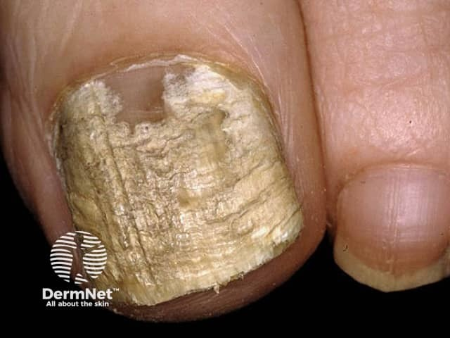
На снимке выше — поражение ногтевой пластины при кандидозном онихии. Обратите внимание: пластина мутная, с характерным обесцвечиванием и деформацией. Это обычная клиника кандидозного поражения ногтя, которая сама по себе не отличается от таковой у иммунокомпетентного пациента. Иначе выглядит онихомикоз, вызванный Trichophyton rubrum.
Проксимальная подногтевая форма онихомикоза — поражение, при котором грибок проникает в ноготь не с дистального (свободного) края, как это происходит у большинства людей, а с проксимального, то есть у основания ногтевой пластины. Внешне это выглядит как молочно-белое пятно именно у корня ногтя, тогда как свободный край поначалу остаётся относительно чистым. Такая форма встречается крайне редко у людей с нормальным иммунитетом. При ВИЧ-инфекции онихомикоз, вызванный Trichophyton rubrum, протекает преимущественно в проксимальной подногтевой форме — и это обстоятельство само по себе служит клиническим маркёром иммунодефицита.[5, с. 225] Диагноз подтверждают микроскопическим исследованием соскоба ногтевых чешуек и посевом. Для системной терапии используют итраконазол (орунгал), тербинафин (ламизил) и флуконазол (дифлюкан).
Теперь о числах, которые показывают соотношение сил. При первичном инфицировании вирусом простого герпеса в 80% случаев инфекция протекает субклинически, латентно — человек заражается и не знает об этом. Клинически манифестная форма с подъёмом температуры до 39–40 °C составляет лишь 20% первичных случаев. Это соотношение — четыре скрытых случая на один явный — объясняет, почему вирус так широко распространён в популяции. При ВИЧ картина меняется: иммунная система больше не сдерживает реактивацию. У больных СПИДом простой герпес протекает атипично и тяжело: сыпь диссеминированная, формируются хронические глубокие язвы во рту, на лице, в области половых органов, трудно поддающиеся лечению. У мужчин-гомосексуалистов особую проблему представляют тяжёлые перианальные и ректальные язвы. Лечение — ацикловир внутрь или внутривенно; следует учитывать, что существуют ацикловирорезистентные формы.
Опоясывающий лишай при ВИЧ может быть ранним симптомом СПИДа у лиц, принадлежащих к группам риска, — он нередко возникает до появления других клинических проявлений болезни. Важная и часто забываемая деталь: следует учитывать потенциальную воздушно-капельную передачу varicella и herpes zoster, особенно в помещениях, где большинство пациентов находится в состоянии иммуносупрессии. Это означает, что больной с опоясывающим лишаём в отделении онкологии или трансплантологии — источник опасности для соседей по палате.
Контагиозный моллюск у ВИЧ-инфицированных выглядит иначе, чем у детей с нормальным иммунитетом. Папула, медленно увеличиваясь в размерах, может достичь диаметра 5–10 мм за 6–12 недель.[2, с. 37] У иммунокомпетентных людей высыпания единичны или немногочисленны и самостоятельно проходят через 6–9 месяцев. У больных СПИДом элементы необычно многочисленны, расположены широко, нередко занимают атипичные места — лицо, веки — и не склонны к самостоятельному разрешению.
Норвежская (корковая) чесотка — это форма чесотки, которая развивается при тяжёлом иммунодефиците. Название «норвежская» историческое; суть в том, что клещ Sarcoptes scabiei у иммунокомпетентного человека вызывает привычную чесотку с единичными ходами, тогда как при угнетённом иммунитете его численность на коже возрастает во много раз — кожа буквально кишит паразитами. Клинически это проявляется массивными гиперкератотическими, шелушащимися бляшками на эритематозном фоне, атипичным поражением лица и волосистой части головы, интенсивным зудом и постскабиозным дерматитом, трудно поддающимся лечению.[5, с. 225] Такой пациент заразен несравнимо больше обычного: там, где больной с типичной чесоткой несёт на себе единицы клещей, при норвежской форме их тысячи.
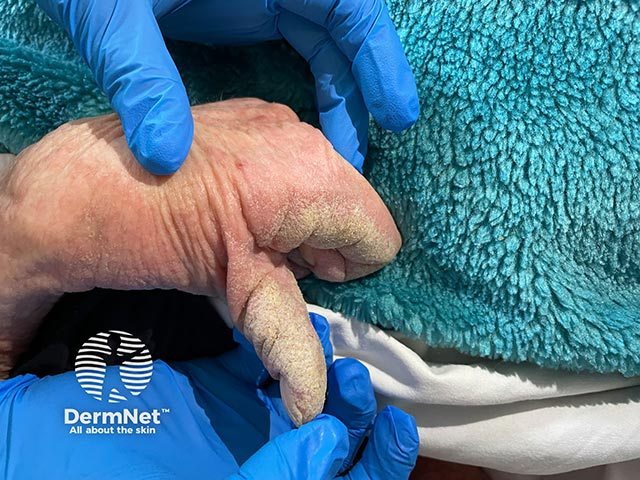
На снимке видна кисть с выраженным гиперкератозом — именно такие изменения кожи ладоней характерны для корковой чесотки. Кожа утолщена, покрыта плотными чешуйками и корками; эта картина резко контрастирует с единичными папулами и ходами при обычной чесотке. Смотрите, как руки в перчатках держат кисть для осмотра — и это не случайно: контактная заразность при норвежской форме чрезвычайно высока.
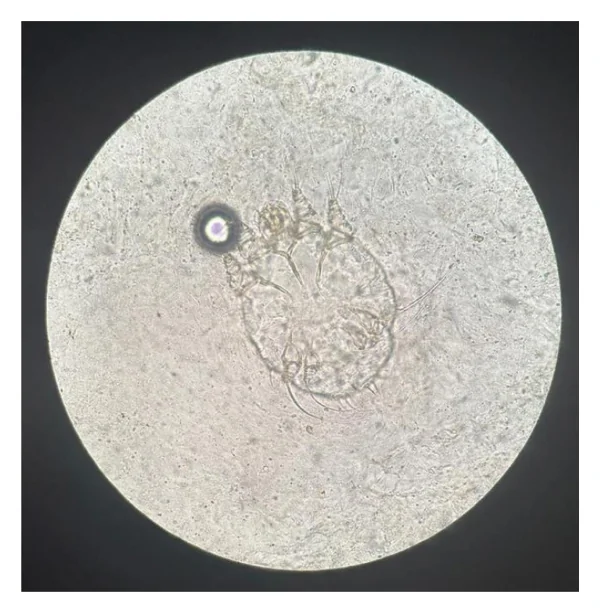
На микроскопическом снимке — Sarcoptes scabiei: полупрозрачное овальное членистоногое с характерной морфологией. Стрелка указывает на клеща. При норвежской чесотке таких находок в одном соскобе будет множество — это принципиально отличает её от обычной формы, где клеща нередко приходится искать в нескольких препаратах подряд. Чесоточный клещ при температуре +55 °С гибнет в течение 10 минут — это важно помнить при дезинфекции вещей и постельного белья, особенно у иммунодефицитных пациентов, где заразность особенно высока.
Пиодермии у ВИЧ-инфицированных протекают в распространённых формах: стафилококковые и стрептококковые пиодермиты, шанкриформная, хроническая язвенная и вегетирующая пиодермии.[5, с. 225] Принципиально важное отличие от стандартной тактики: даже при лёгких формах пиодермии у ВИЧ-инфицированных показана системная антибактериальная терапия — потому что у пациента с иммунодефицитом поверхностный гнойничок способен быстро стать источником генерализованной инфекции. Ждать, пока «само пройдёт», здесь нельзя. Дозы препаратов при этом должны быть выше стандартных, а курсы — более продолжительными и при необходимости повторными.[5, с. 225] К эндогенным факторам, предрасполагающим к пиодермии, ВИЧ-инфекция относится наравне с сахарным диабетом и хроническими интоксикациями.
Главный вывод раздела: при ВИЧ-инфекции инфекционные поражения кожи приобретают атипичную клинику, необычную распространённость и упорное течение — и именно эти особенности, а не стандартная картина болезни, должны насторожить врача и направить диагностический поиск. Лечение дерматозов у ВИЧ-инфицированных требует постоянного клинико-лабораторного контроля, более высоких доз этиотропных препаратов и более длительных курсов.[5, с. 225]
Саркома Капоши и другие неинфекционные дерматозы при ВИЧ-инфекции
Кажется, что саркома Капоши — это опухоль, которая начинается с узлов и сразу бросается в глаза. На деле первые элементы настолько неприметны, что их легко принять за синяки или сосудистые пятна: небольшие синевато-красные пятна без чёткого контура, слегка возвышающиеся над кожей. Только потом, по мере прогрессирования, они превращаются в бляшки и узлы — и уже тогда картина становится угрожающей.
Саркома Капоши (другое название — ангиоретикулёз Капоши, от лат. angioreticulosis Kaposi) — злокачественная опухоль сосудистого происхождения, поражающая кожу и внутренние органы. Синевато-красные пятна постепенно трансформируются в узлы и бляшки, возвышающиеся над здоровой кожей; на их поверхности характерны телеангиэктазии и геморрагии. Со временем образуются длительно не заживающие язвы; при слиянии крупных очагов и нарушении лимфооттока развивается элефантиаз — стойкий слоновый отёк конечностей с огрубением кожи.[2, с. 152] Множественные узлы располагаются симметрично, преимущественно на стопах и голенях, реже — на верхних конечностях и слизистых оболочках.[2, с. 152]
Посмотрите, как выглядит начало болезни на первом снимке ниже.
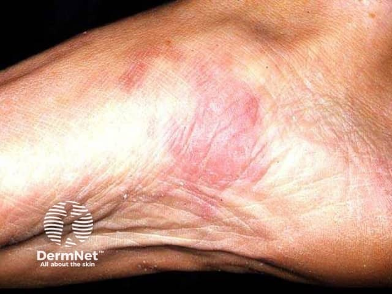
На этом кадре — стадия пятна (patch stage): розовато-красное эритематозное пятно без чёткой границы, почти не возвышающееся. Именно на этом этапе диагноз чаще всего пропускают: пятно не болит, не шелушится, и пациент не придаёт ему значения. Следующий снимок показывает, во что оно превращается.
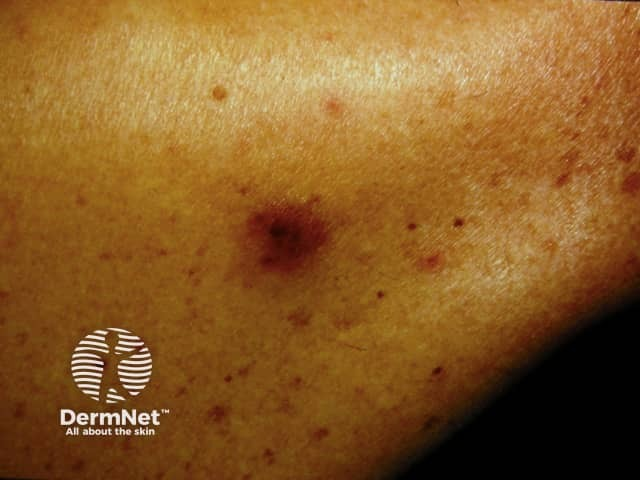
Здесь уже сформированная бляшка — округлое красновато-коричневое уплотнение с чёткими краями, заметно возвышающееся над кожей. Обратите внимание на коричневатый оттенок: он появляется при накоплении гемосидерина вследствие постоянных мелких геморрагий в ткани опухоли. А вот чем заканчивается нелеченая болезнь на голени — показывает третий снимок.
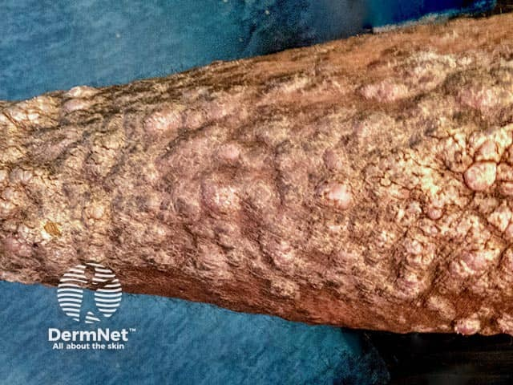
На этой фотографии — конечная стадия: массивный элефантиаз голени с бородавчатыми разрастаниями и диффузной деформацией тканей. Кожа утолщена, потеряла нормальный рельеф. Это и есть исход, к которому ведёт длительное прогрессирование без лечения.
СПИД-ассоциированная форма саркомы Капоши клинически отличается от классической. Элементы множественные и широко распространённые — на коже и слизистых оболочках одновременно.[5, с. 225] Болезнь развивается преимущественно у мужчин-гомосексуалистов и у женщин, инфицированных ВИЧ половым, а не шприцевым путём.[5, с. 225] Вначале процесс представлен слегка приподнятыми овальными или удлинёнными синюшно-фиолетовыми инфильтратами с нечёткими границами; они чаще всего возникают на туловище, голове и шее, а также в местах травм — по типу изоморфной реакции Кёбнера.[5, с. 225] По мере быстрого прогрессирования формируются красные или фиолетовые бляшки и узлы.[5, с. 225] Характерна генерализованная полилимфаденопатия; в итоге у большинства больных возникает специфическое поражение внутренних органов — в первую очередь желудочно-кишечного тракта.[5, с. 225] Гистологическая картина при этом подобна классической форме саркомы Капоши.[5, с. 225] Лечение проводится инъекциями α-интерферона.[5, с. 225]
Себорейный дерматит — одно из наиболее частых проявлений СПИДа. Важно, что он нередко начинается ещё до других симптомов болезни, а его тяжесть прямо коррелирует с нарастанием иммуносупрессии: чем глубже подавлен иммунитет, тем тяжелее дерматит. Проявляется зудящими эритематозными пятнами с жирными гиперкератотическими чешуйками на лице, волосистой части головы и в паховых складках; при СПИДе процесс может генерализоваться. Это делает себорейный дерматит ценным ранним маркером: его внезапное утяжеление или распространение — повод думать о нарастающем иммунодефиците.
Псориаз у ВИЧ-инфицированных протекает тяжело. Вместо обычных бляшек развивается генерализованный пустулёзный псориаз или эритродермия, нередко с поражением ладоней.[5, с. 225] Появление или резкое обострение псориаза в этом контексте — плохой прогностический признак СПИДа.[5, с. 225]
Помимо перечисленного, при СПИДе встречаются и другие дерматозы. Диссеминированный отрубевидный лишай протекает с развитием инфильтрации и лихенификации кожи — иначе, чем у здорового человека. Вирусные бородавки могут быть единичными или широко распространёнными. Узловатая почесуха проявляется хроническими зудящими узелками. Наконец, регистрируются злокачественные лимфомы кожи.[5, с. 225] Лечение всех этих состояний на фоне ВИЧ-инфекции требует постоянного клинико-лабораторного контроля: дозы этиотропных препаратов должны быть выше, а курсы — длиннее и при необходимости повторными.[5, с. 225]
Дифференциальная диагностика в дерматовенерологии: ключевые сопоставления
Твёрдый шанкр — элемент, с которого начинается сифилис и с которого начинается диагностическая ошибка. Первичный аффект размером 0,5–1,0 см безболезнен, имеет хрящевидное уплотнение в основании и чистое дно. Именно эти три признака — отсутствие боли, плотность, чистота — и отличают его от большинства конкурентов. Но не будь у врача системного алгоритма исключения, пришлось бы каждый раз начинать заново с нуля, и часть пациентов терялась бы ещё до серологии.
Разберём последовательно. Фурункул — болезненный, с гнойным стержнем, окружён отёчной гиперемией; плотность основания у него мягкая, воспалительная, а не хрящевидная. Генитальный герпес начинается с жжения и группы пузырьков, которые затем эрозируют: эрозии поверхностные, полициклические, болезненные при прикосновении. Баланопостит бактериальный или кандидозный даёт разлитую гиперемию, отёк, нередко налёт и зуд — всё это субъективно, чего при шанкре практически не бывает. Онкологические поражения вульвы и полового члена (эпителиомы) могут имитировать шанкр плотностью основания, но край язвы при эпителиоме неровный, подрытый или вывернутый, а не правильный и пологий. Острые язвы Люпшитца возникают у молодых женщин внезапно, болезненны и нередко связаны с вирусной инфекцией. Генитальная аллергия и трихомониаз дают выраженный зуд и патологические выделения. Во всех этих случаях отсутствие болезненности и хрящевидная плотность шанкра работают как первый фильтр, а тёмнопольная микроскопия и серология — как окончательный.
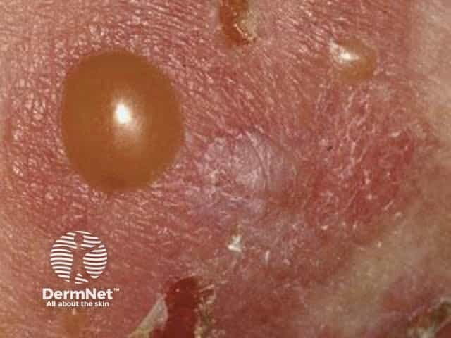
Особую сложность создаёт шанкриформная пиодермия — форма хронической смешанной язвенной пиодермии, которая настолько точно воспроизводит внешний вид твёрдого шанкра, что клинически их не разграничить: та же округлая язва, та же плотность, те же увеличенные регионарные лимфоузлы. Единственный надёжный путь — исследование отделяемого на бледную трепонему и постановка серологических реакций на сифилис. Отрицательный результат по обоим тестам позволяет выставить пиодермию; любое сомнение требует повторного контроля через 2 недели.
Посмотрите на снимок ниже.
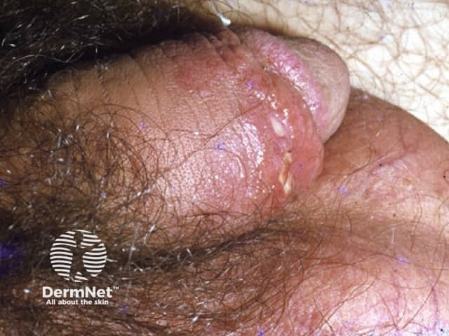
На этом кадре — мягкий шанкр (chancroid): на головке полового члена виден участок гиперемии с мелкими сгруппированными эрозиями. Обратите внимание, что края неровные, основание мягкое, без уплотнения — именно этим мягкий шанкр отличается от твёрдого. При мягком шанкре выражена болезненность, а возбудитель — стрептобацилла, а не бледная трепонема; дифференциальный диагноз окончательно решается бактериоскопией и серологией.
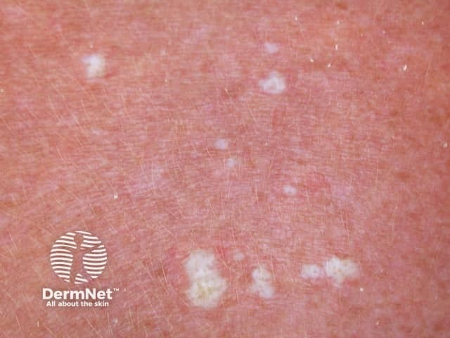
Следующая пара — сифилитическая пузырчатка новорождённых против стафилококковой. Стафилококковая пузырчатка новорождённых (пиококковый пемфигоид) проявляется пузырями разных размеров — от 0,5 до 1,5 см — с вялой тонкой покрышкой и воспалительным венчиком; температура поднимается до 38 °С, ребёнок беспокоен, отказывается от еды. Высыпания захватывают туловище, складки, волосистую часть головы, но не ладони и подошвы. При сифилитической пузырчатке картина иная: пузыри плотные, с инфильтрацией в основании, ладони и подошвы поражаются обязательно — это патогномоничный признак. Выраженных нарушений общего состояния нет. Из содержимого пузырей выявляется бледная трепонема, и серологические реакции на сифилис положительны.[5, с. 47] Таким образом, три критерия разграничения: локализация (ладони/подошвы — да/нет), характер покрышки (плотная/вялая) и серология.
Теперь — сифилитическая эктима против эктимы вульгарной. Эктима вульгарная начинается с крупной фликтены или глубокой пустулы; по периферии — яркая гиперемическая кайма, вокруг формируется мягкий инфильтрат, язва болезненна.[4, с. 26] В течение 2–4 недель она рубцуется.[5, с. 49] Сифилитическая эктима лишена выраженного островоспалительного компонента: нет яркой красноты вокруг, нет болезненности, нет отёчного вала. Это и есть главный клинический ориентир. Окончательный ответ даёт серология: серологические реакции на сифилис и исследование на бледную трепонему положительны при сифилитической эктиме и отрицательны при вульгарной.[5, с. 49]
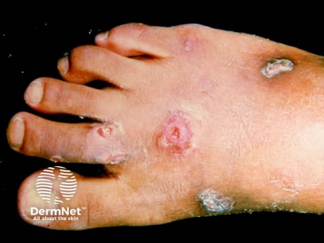
На этой фотографии — эктима вульгарная: тыл стопы, множественные глубокие язвы с коричневыми корками и — обратите внимание — хорошо заметной воспалительной каймой вокруг каждого элемента. Именно эта кайма, яркая и отёчная, первой заставляет усомниться в сифилитической природе поражения. Сифилитическая эктима выглядела бы аналогично по форме, но без этого воспалительного кольца — и именно отсутствие кольца должно немедленно направить мысль к серологии.
Перейдём к дерматозам при ВИЧ. Кожа при ВИЧ-инфекции — не просто орган-мишень, а сигнальная система: характер, тяжесть и упорство кожных изменений отражают состояние иммунитета. Стандартные дерматозы у ВИЧ-положительных пациентов текут иначе: себорейный дерматит приобретает обширный и резистентный характер, опоясывающий лишай рецидивирует и генерализуется, кандидоз слизистых оболочек переходит во флюконазол-резистентные формы, контагиозный моллюск разрастается до гигантских узлов, а саркома Капоши из редкой опухоли пожилых становится агрессивным мультифокальным процессом. Атопический блефарит у ВИЧ-инфицированного — уже не изолированная аллергическая реакция, а возможный маркер нарастающего иммунодефицита.
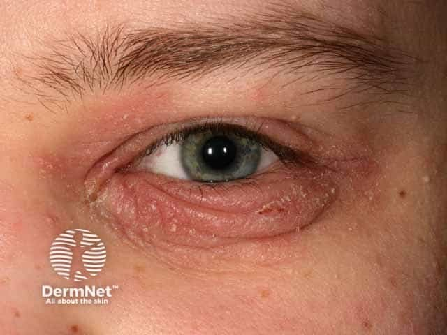
На кадре — блефарит при атопическом дерматите: выраженная эритема, отёк, мелкая складчатость кожи века. У здорового пациента это изолированная аллергическая реакция. У пациента с ВИЧ такая же картина, но упорно рецидивирующая и не отвечающая на стандартную терапию, — сигнал проверить иммунный статус.
Особого внимания заслуживает сочетание ВИЧ и сифилиса. При ВИЧ-инфекции сифилис прогрессирует быстрее: до развития третичного сифилиса иногда проходит лишь несколько месяцев — тогда как обычно на это уходят годы. Серологические реакции могут быть атипичными — как ложноотрицательными, так и ложноположительными. Первичный шанкр нередко множественный, язвенный, глубокий. Вторичный период может перекрываться с первичным. Именно поэтому у каждого пациента с сифилисом показано тестирование на ВИЧ, а у каждого ВИЧ-положительного — регулярный серологический контроль на сифилис.
Все описанные выше сопоставления собраны в таблице ниже — можете сверяться с ней, отрабатывая конкретную пару диагнозов. Каждая строка — это один клинический выбор, и в тексте выше он уже разобран: читатель, пропустивший таблицу, не потеряет ни одного критерия.
| Пара | Сифилитический вариант — ключевые черты | Конкурирующий диагноз — ключевые черты | Решающий тест |
|---|---|---|---|
| Твёрдый шанкр vs фурункул | Безболезнен, хрящевидная плотность, чистое дно; 0,5–1,0 см (обычный); до 2 мм — карликовый; свыше 1,5 см — гигантский | Болезнен, гнойный стержень, воспалительный инфильтрат, мягкая консистенция | Тёмнопольная микроскопия; серология |
| Твёрдый шанкр vs генитальный герпес | Одиночная язва, безболезненна, плотное основание | Жжение, группа пузырьков → поверхностные болезненные эрозии, полициклические края | ПЦР на ВПГ; тёмное поле; серология на сифилис |
| Твёрдый шанкр vs баланопостит (бакт./кандидозный) | Нет субъективных ощущений, чёткие края язвы | Зуд, жжение, разлитая гиперемия, налёт, отёк; субъективно выражен | Микроскопия отделяемого; посев; серология |
| Твёрдый шанкр vs эпителиома | Правильные пологие края, дно ровное, безболезнен | Неровный, подрытый или вывернутый край, плотность основания онкологическая | Биопсия; серология; тёмное поле |
| Шанкриформная пиодермия vs твёрдый шанкр | Бледная трепонема найдена; серореакции положительны | Клинически идентична шанкру, но трепонема отсутствует; серология отрицательна | Тёмнопольная микроскопия + серология (повтор через 2 нед) |
| Сифилитическая пузырчатка новорождённых vs стафилококковая | Ладони и подошвы поражены; пузыри плотные, с инфильтрацией; общее состояние удовлетворительное; трепонема в содержимом; серология + | Ладони/подошвы интактны; пузыри вялые, тонкая покрышка; t° до 38 °С, беспокойство, отказ от еды | Серология на сифилис; бактериологический посев |
| Сифилитическая эктима vs эктима вульгарная | Нет воспалительного компонента по краям; безболезненна; серология +; трепонема обнаруживается | Яркая гиперемическая кайма, болезненность, мягкий инфильтрат; серология − | Серология на сифилис; исследование на бледную трепонему |
| Сифилис при ВИЧ vs сифилис без ВИЧ | Атипичные серореакции; шанкр нередко множественный; прогрессия до третичного — месяцы | Типичное течение, одиночный шанкр, чёткая периодизация | Тест на ВИЧ; повторная серология; ликворология при подозрении на нейросифилис |
Как видите в таблице, во всех парах центральная ось — это серология и тёмнопольная микроскопия. Клинические признаки сужают круг и расставляют приоритеты, но окончательный выбор — лабораторный. Именно поэтому ни одна генитальная язва не должна расцениваться как «очевидно не сифилис» без верификации: цена ошибки — пропущенная инфекция у пациента, который может заразить других.
Источники
- 9. лекция сифилис
- Конспект лекций дерматология
- 3. Лекция микозы
- 2. лекция Пиодермиты
- Иванов — Кожные и венерические болезни